Hafta 2 · Bilgisayar Uygulamaları ve Yapay Zeka
Yapay Zeka Beslenme Bilimini Nasıl Dönüştürüyor?
Popülasyon Düzeyindeki Genel Önerilerden Bireye Özgü Hassas Beslenmeye: Büyük Veri, Biyolojik Sensörler ve Makine Öğrenmesi.
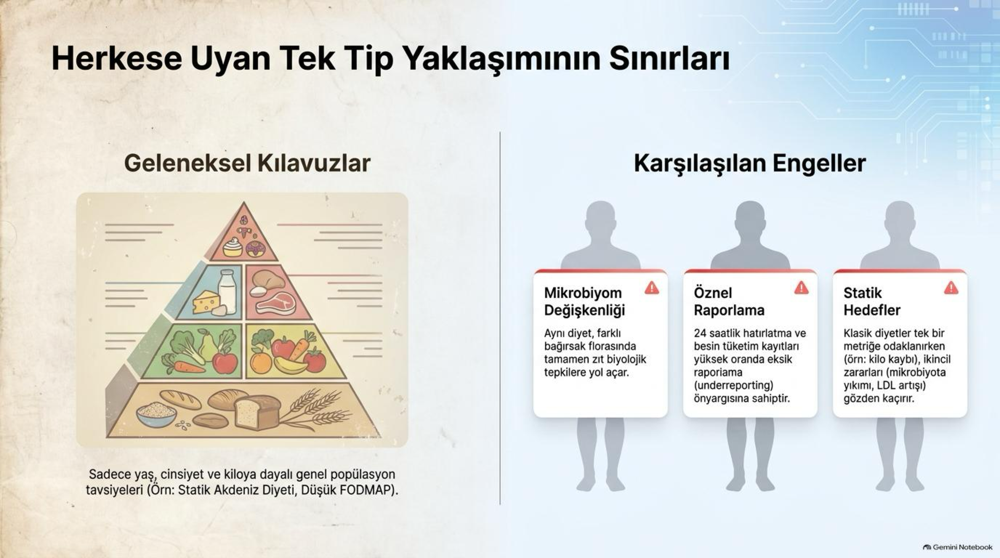
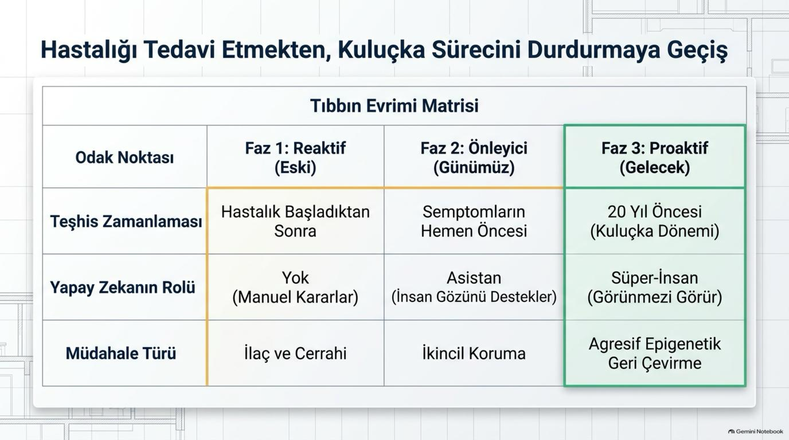
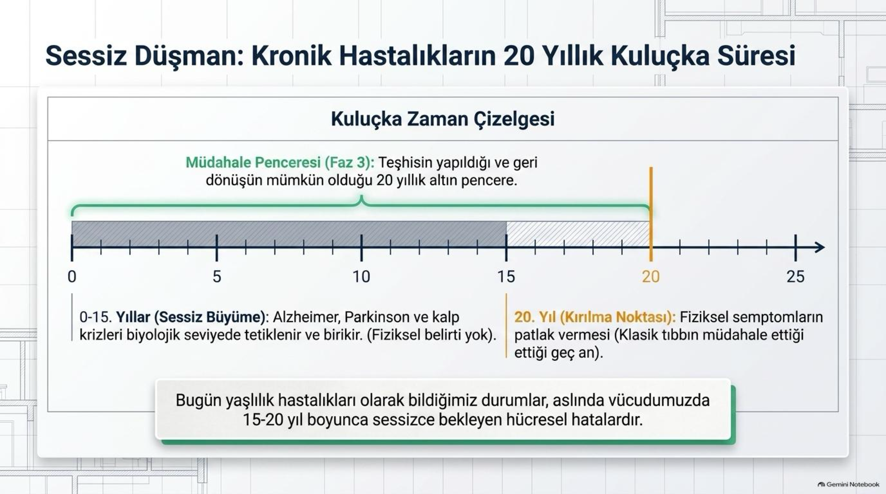
Sistem Biyolojisi & 4P Tıp · Leroy Hood
4P Tıp Çağı: Sağlık ve Beslenmenin Yeni Anayasası
Nobel adayı Leroy Hood'un geliştirdiği 4P Tıp Paradigması, insanı izole organlar değil, dinamik bir biyolojik ağ (network) olarak ele alır:
Mitokondriyal hasarı ve inflamasyonu (meta-flammation) besinlerle durdurmak.
Poligenik Risk Skorları ve AI ile 10 yıllık kronik riskleri öngörmek.
Mikrobiyom çeşitliliği ve genetik enzimlere (FTO/GLUT-2) özel reçete.
CGM ve giyilebilir sensörlerle sağlığını 7/24 yöneten aktif danışan.
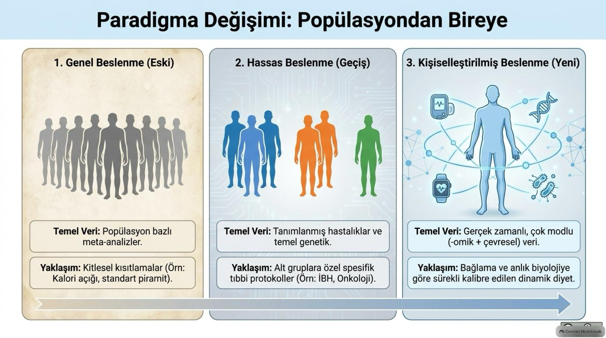
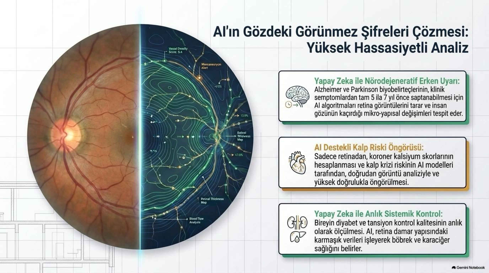
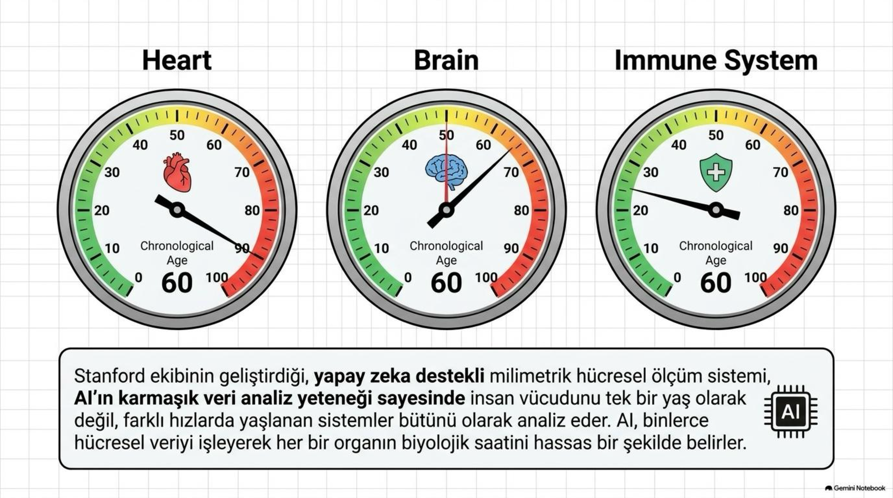
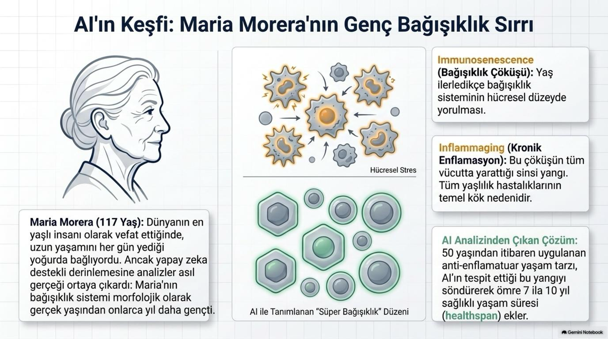
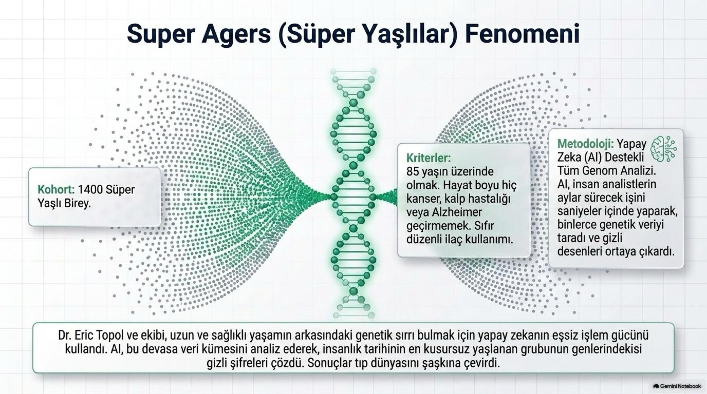
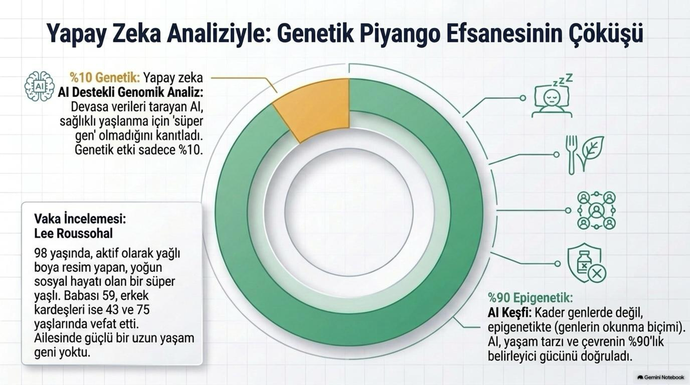
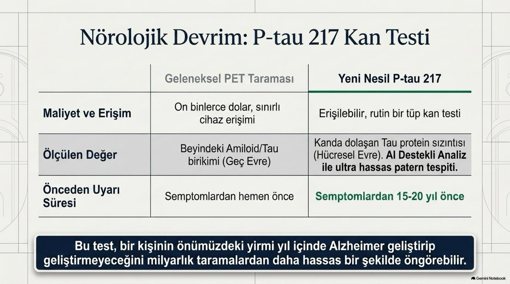
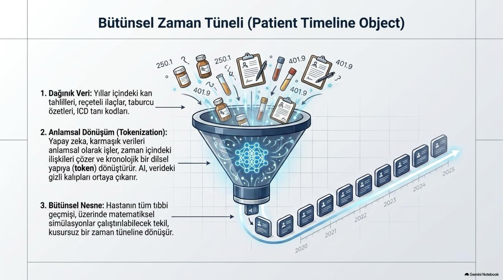
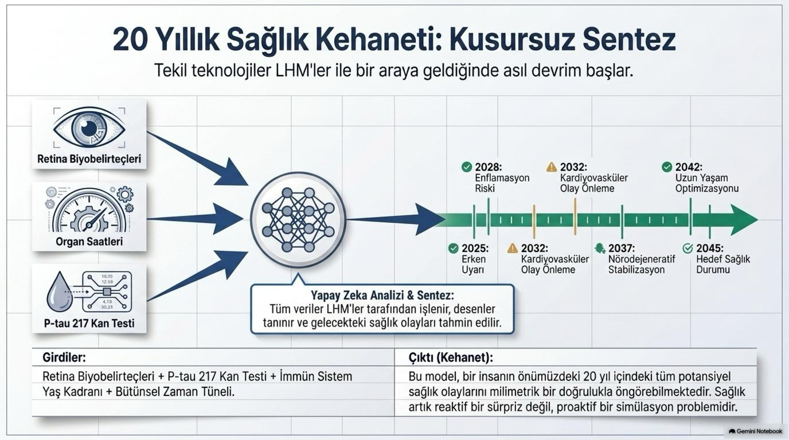
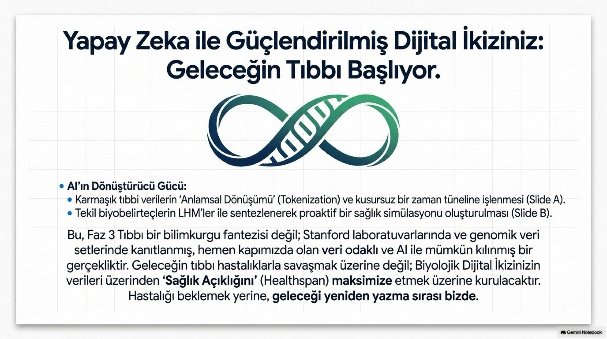
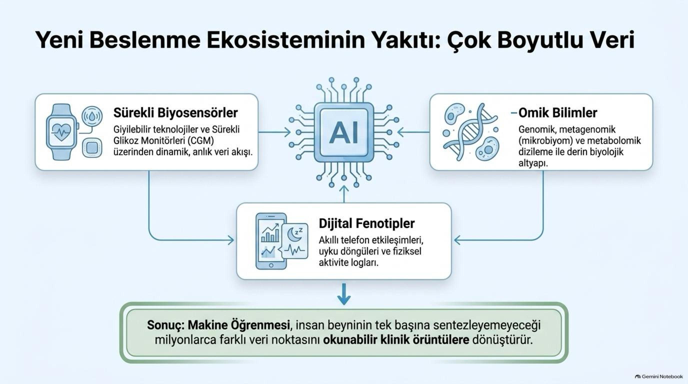
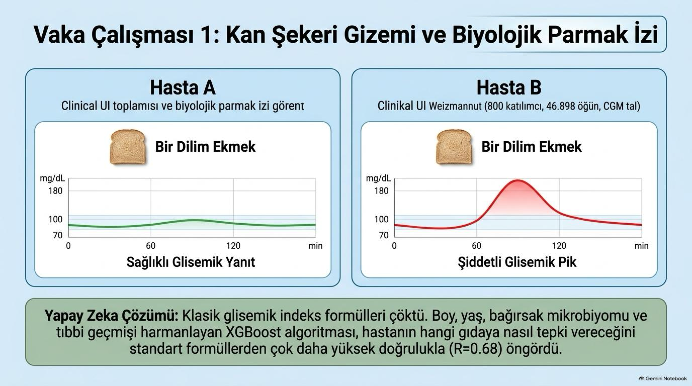
Diabetes Care RCT: Kişiselleştirilmiş ML diyeti, standart altın standart Akdeniz diyetine kıyasla kan şekerinin >140 mg/dL üzerinde kalma süresini 4 kat daha fazla azalttı (-1.3 sa/gün vs -0.3 sa/gün, p<0.001) ve HbA1c'yi 2 kat daha fazla düşürdü.
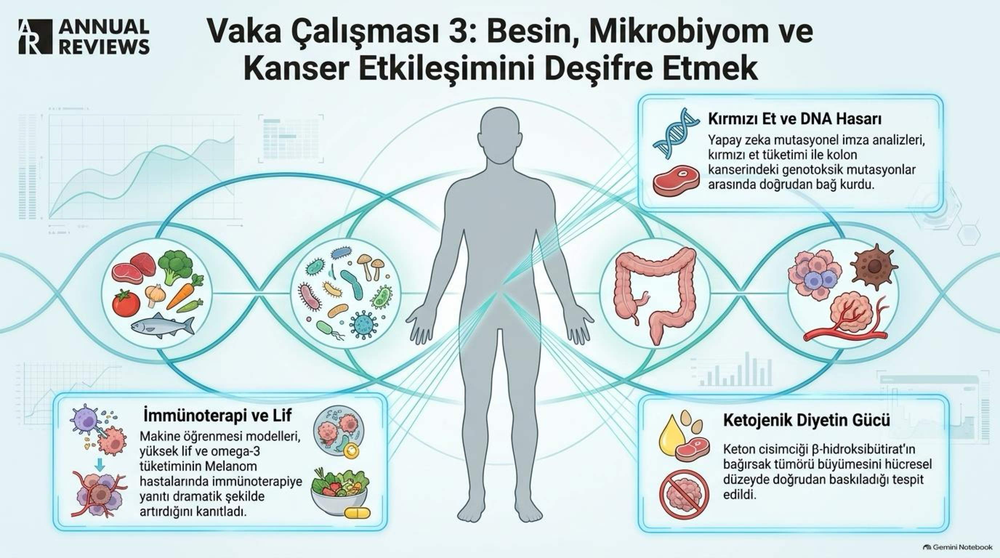
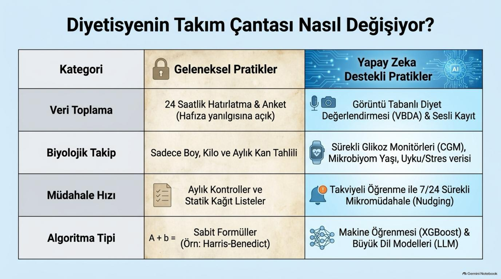
Dönüşümün Eşiğinde · Güncel Saha Verileri
Rutin Görevlerimizi Yapay Zeka Hızla Devralıyor
Yapay zeka sadece basit bir hesap makinesi değildir; klinik pratiğimizin merkezine yerleşmektedir:
Diyetisyen: ~45 Dk · AI: 40 Sn
Mayo Clinic (NCP 2026): 5 Klinik Diyetisyen vs 4 LLM karşılaştırmasında, yapay zeka 3 günlük kişiselleştirilmiş menüyü 40 saniyede hazırladı. Rutin liste yazarlığı hızla otomatikleşiyor.
ChatGPT vs. 18 Diyetisyen
J Nutr Metab (2023): 18 diyetisyenin çift-kör değerlendirmesinde, genel beslenme sorularında ChatGPT anlaşılırlık, eyleme geçebilirlik ve bilimsel doğrulukta insan uzmanlardan daha yüksek puan aldı.
TDD Görüş Raporu (2026)
Türkiye Diyetisyenler Derneği: "Yapay zeka diyetisyenin yerini alamaz; ancak yapay zekayı kullanan diyetisyen, kullanmayan meslektaşının yerini alacaktır."
İnteraktif Sınıf Anketi · 1. Aşama (Ders Öncesi)
🔄 Önce vs. Sonra Kıyası İçin KaydedilecekYapay Zeka & Diyetisyenlik: Sizin Bakış Açınız
Sizce yapay zeka, geleneksel diyetisyenin rutin görevlerinin yüzde kaçını devralabilir?
Yapay zeka bir diyetisyenden daha hatasız kalori, porsiyon ve biyokimyasal kısıt hesabı yapabilir mi?
Beslenme Bakım Süreci (NCP) · 4 Adımlı Dönüşüm
Klinik Pratiğimiz Nasıl Değişiyor?
| NCP Basamağı | Eskiden (Klasik & Manuel Yöntem) | Yapay Zeka ile Şimdi & Gelecekte (Kanıta Dayalı) |
|---|---|---|
| 1. Değerlendirme (Assessment) |
24 saatlik hatırlatma anketleri; danışanın hafıza yanılgısı, porsiyon tahmini ve %30–50 eksik bildirim (underreporting) hatası. | Fotoğraftan 3D piksel besin tanıma (%99 doğruluk), çene/yutkunma sensörleri ve EHR'den 48 saat önceden malnütrisyon alarmı. |
| 2. Tanı (Diagnosis) |
Yalnızca kısıtlı rutin kan tahliline ve hastanın sözlü beyanına bakılarak yazılan genel, ezbere PES cümleleri. | 15 parametreli makine öğrenmesiyle hastaya sormadan steatoz ayrımı (SLI), BT kas segmentasyonu ve mikrobiyal fenotipleme. |
| 3. Müdahale (Intervention) |
Hesap makinesi ve besin cetvelleriyle 45 dakika boyunca tek bir kişiye özel menü gramajı dengelemeye çalışmak. | 40 saniyede kişiye özel 5 menü taslağı; diyetisyenin ise ölümcül potasyum/protein halüsinasyonlarını denetleyen güvenlik kalkanı olması. |
| 4. İzleme (Monitoring) |
Ayda bir tartı kontrolü ve hastanede yatan hastanın tabağında kalan yemeğe bakıp "yarısını yedi" göz kararı notu tutmak. | 3D derinlik kameralarıyla tabak artığı analizi (%84.1–91), sürekli glukoz sensörleri (CGM) ve hücre düzeyinde Dijital İkiz simülasyonu. |
1. Basamak: Beslenme Değerlendirmesi & Tarama · Klinik Literatür
1. Değerlendirme: Hafıza Yanılgısından 48 Saat Erken Alarma
• %76 Gözden Kaçırma: Hemşirelerin yatışta doldurduğu statik MUST taramasında ilk gün malnütrisyonu yakalama hassasiyeti sadece %24 seviyesinde kalıyordu.
• %30–50 Eksik Bildirim: 24 saatlik hatırlatma anketlerinde hastaların unutma ve sosyal beğeni kaygısı nedeniyle kaloriler gizleniyordu (obez bireylerde %59'a varan sapma).
• MUST-Plus (Mount Sinai): Tahlil ve vitalleri otomatik tarayarak ilk gün yakalama hassasiyetini %204 artırdı (AUROC > 0.90).
• FANS NLP Modeli (Peking Union 2026): Serbest klinik doktor notlarından 0.9142 F1-skoru ile disfaji, anemi, ateş ve kilo kaybını anında ayıklar.
• goFOOD™ & Thai Food-AI: 3D stereo derinlikle fotoğraftan karbonhidrat hatasını %4'e düşürdü (Diyetisyen: %7.6–25.5).
Giyilebilir akustik çene sensörleri (çiğneme/yutkunma sesleri), akıllı gözlükler ve cilde yapıştırılan epidermal ter biyosensörleri ile veri toplama %100 pasif, kesintisiz ve sıfır hasta beyanı sapmasıyla yürütülecek.
Seansın %40'ını alan "Ne yediniz?" sorgusu kapanıyor. Pasif sensörler unutulan kalorilerin %20 fazlasını yakalarken; Fizik Bilgili Yapay Sinir Ağları (PINN) ıslak laboratuvar deneyi yapmaksızın proteinin bağırsaktaki emilim kinetiğini R² = 0.91 ile simüle ediyor!
2. Basamak: Beslenme Tanısı · Biyokimya & Omiks Odaklı Karar Destek
2. Tanı: Ezbere PES'ten BT Kas Segmentasyonu ve SLI İndeksine
• Sadece rutin kan tahlillerine bakılarak subjektif yorumlar yapılır ve kalıplaşmış, genel PES (Problem-Etiyoloji-Belirti) cümleleri yazılırdı.
• Kas ve yağ dokusu kayıpları yalnızca tartı ve mezura ile yüzeysel izlenir; ödem arkasındaki sinsi sarkopeni gözden kaçardı.
• BT Kesitlerinden U-Net Kas Segmentasyonu: Rutin abdominal BT L3 kesitlerinden iskelet kasını 0.92–0.94 DSC doğruluğuyla segmente eder; Potansiyel Geri Döndürülebilir Kaşeksi'yi (PRCC) 0.887 AUC ile saptar.
• SLI Modeli (DLD 2026): Hastaya hiç alkol sorusu sormadan 15 rutin kan parametresiyle MASLD vs MetALD ayrımını %85–90 doğrulukla yapar.
• XAI & SHAP: YZ'nin tanı kararındaki her değişkenin ağırlığını grafiklerle şeffafça diyetisyene kanıtlar.
Yapay zeka, omiks verilerini ve Patient Timeline Object zaman tünelini birleştirerek; henüz klinik semptom vermemiş hastalıklara dair moleküler düzeyde profiller çıkaracak, diyetisyen doğrudan genetik/epigenetik hedefe yönelik tanı koyacaktır.
Hastanın yalan söylemeye en meyilli olduğu "alkol tüketim miktarı" sorusunu tamamen bypass edip, 15 rutin kan parametresiyle steatoz alt tiplerinin %85 doğrulukla teşhis edilmesi ve mikrobiyota metabolomik modellemesiyle (MCMM) Crohn ayrımının %95 doğrulukla yapılması!
3. Basamak: Beslenme Müdahalesi · 4 Optimizasyon Motoru & Kritik Riskler
3. Müdahale: 4 Optimizasyon Motoru vs. Mayo Clinic KBH Skandalı
1. Doğrusal Programlama (Linear Programming - Simplex): Katı tıbbi kısıtlar altında maliyeti/kaloriyi milisaniyede çözer.
2. Bulanık Mantık (Fuzzy Logic - Mamdani): 1144 kuralı aynı anda işleterek çoklu kronik vakalarda uzman diyetisyenlerle %97 uyum sağlar.
3. Genetik Algoritmalar (GA): Trilyonlarca kombinasyon arasından 500 nesil evrimle en kusursuz menüyü bulur.
4. Takviyeli Öğrenme (RL): Çocuk kreş menülerinde diyetisyenleri istatistiksel olarak geride bırakmıştır (p<0.001).
• Hız Şoku: 5 RDN vs 4 LLM denemesinde YZ menüyü 40 saniyede üretti (Diyetisyen: 44 dk).
• KBH Protein Riski: KBY Evre 3-4 hastasında LLM proteini 0.44 g/kg'a aşırı kısarak (%80.7) hastayı ağır malnütrisyon riskine soktu; üstelik 5/5 tam güven skoru bildirdi!
• Ketojenik Sapma: ChatGPT-4o doymuş yağı kılavuzların %172 üzerine çıkardı.
Yapay zeka menü yazma süresini 45 dakikadan 1 dakikaya indirir ve empatide uzmanları geçer; ancak böbrek hastasına diyet yazarken proteini ölümcül düzeyde kısabilir veya doymuş yağı %172 patlatabilir. Bu durum, diyetisyenin rolünü liste yazarlığından "Klinik Güvenlik Denetçiliği ve Biyolojik Doğrulama Liderliğine" dönüştürmektedir.
4. Basamak: İzleme ve Değerlendirme · Dinamik Takip & Dijital İkiz
4. İzleme: Göz Kararı Tabak Notundan %84.1–91 Tüketim Analizine
• Yatan hastaların ne kadar yediği (tabak artığı / plate waste), servis personelinin "Yemeğin yarısını yedi" şeklindeki göz kararı notlarıyla izlenirdi.
• Bu manuel tahminlerde enerji ve makro besin ögelerindeki hata payı %31.4'ü buluyordu; malnütrisyon günlerce fark edilemiyordu.
• DIMS 2.0 & goFOOD™ Plate Waste: Servis öncesi ve sonrası tabak fotoğraflarını 3D derinlikle karşılaştırarak tüketim hatasını %11.6'ya, doğruluğu %84.1–91'e çıkardı.
• AI-MASLD Human-in-the-Loop: Llama 3.2 ajanı anlık glukoz (CGM) ve stres verisinden trend çıkarır; ancak öneri önce diyetisyen konsolundan onay alır.
• VITAL-COMS Simülatörü: Sanal hastalarla yapılan motivasyonel görüşme eğitimi diyetisyenlerin iletişim becerisini anlamlı artırdı (p=0.001, d=1.03).
Hasta evinde Dijital İkiz (Digital Twin) simülasyonlarıyla 7/24 izlenecek; CGM, HRV ve bağırsak mikrobiyomu verileriyle besinin hücresel yankısı anlık hesaplanıp metabolik sapmada diyetisyene erken alarm gidecektir.
Hastanede personelin gözden kaçırdığı yetersiz protein alımı, tabak kameraları tarafından %84.1 doğrulukla saptanıp anlık EHR'ye işleniyor; diyetisyen saatlerce tepsi aramak yerine doğrudan kritik hastaya odaklanıyor!
🔍 Görüntü Tabanlı Diyet Değerlendirmesi (VBDA) - Görsel Zeka Mimarisi
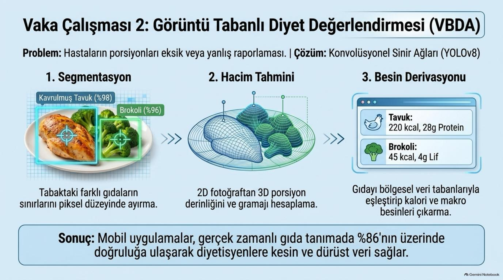
İnteraktif Simülatör · Canlı Klinik Vaka
Canlı İş Akışı Simülatörü: Klasik Manuel Pratik vs. Yapay Zeka Devrimi
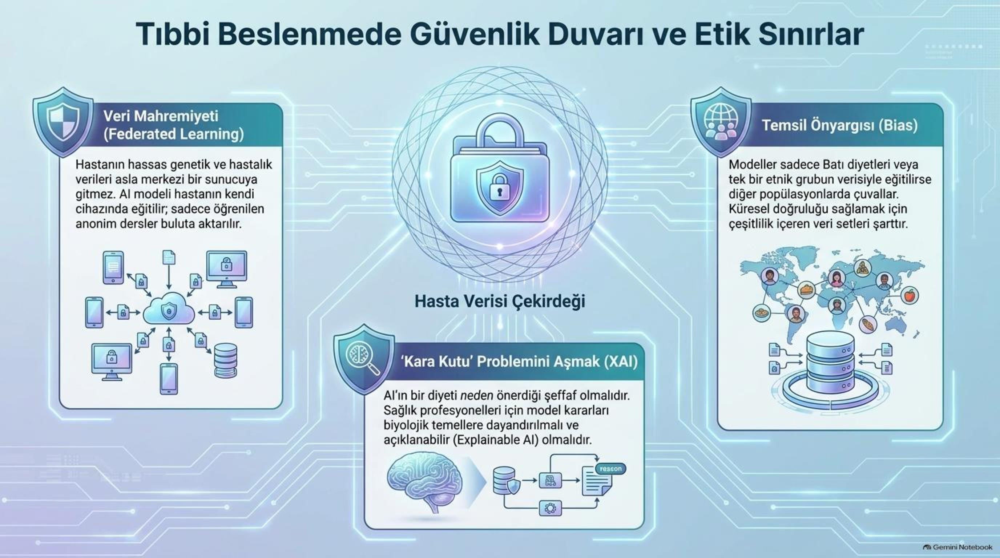
2. Yüksek Riskli Gruplar: Pediatri, gebelik, onkoloji, KBY ve enteral/parenteral beslenmede insan denetimi ve klinik doğrulama zorunludur.
16 Beslenme Uzmanlık Alanında Yapay Zeka Devrimi · Alan 1/16
1. Geriatri: Sinsi Kas Kaybı ve Yaşlı Malnütrisyonunu Erken Yakalamak
Yaşlı popülasyonda malnütrisyon ve kas kaybı (sarkopeni); iletişim güçlükleri, demans ve çoklu ilaç kullanımı nedeniyle çok geç fark edilir. Klasik anketler (MNA-SF) kas erimesini işlev kaybı oluştuktan sonra yakalayabilir; vücuttaki ödem ve su tutulumu ise kas kaybını gözlerden saklar.
Hastaneye Yattığı Gün Risk Tespiti: Rutin tahlilleri ve kol çevresini tarayan karar ağaçları (Liu 2025, 4.000 hasta), yaşlılarda enfeksiyon ve ölüm riskini erkenden haber verir.
GLP-1 Zayıflama İğneleri Uyarısı: Semaglutid gibi popüler ilaçların tetiklediği sinsi kas erimesi, literatür tarayan yapay zeka sistemleriyle erken aşamada saptanır.
Akıllı ev kameraları ve çene sensörleri yaşlının çiğneme hızını ve yutma güçlüğünü (disfaji) 7/24 izleyecek; organ saatlerine göre hücresel yaşlanmayı yavaşlatan anti-enflamatuar geriatrik menüler otomatik şekillenecektir.
Yaşlının vücudundaki sıvı dalgalanmaları ve ödem, yapay zekayı yanıltıp kiloyu normal gösterebilir. Diyetisyen el kavrama gücü (handgrip) ve fiziksel muayeneyle kas sağlığını bizzat doğrular.
16 Beslenme Uzmanlık Alanında Yapay Zeka Devrimi · Alan 2/16
2. Nefroloji: Ölümcül Potasyum Dengesi ve Böbrek Kalkanı
Kronik Böbrek Hastalığı (KBH) ve diyalizde sodyum, potasyum, fosfor ve protein hesabı milimetriktir. Birkaç gramlık yanlışlık ölümcül kalp ritim bozukluğuna (hiperkalemi) yol açabilir; diyetisyen saatlerce cetvellerle boğuşurdu.
DHerbKB Bilgi Tabanı: 8.725 gıdanın mineral içeriği ve 70 toksik bitki sisteme işlenmiş; böbrek evresine göre sıfır hatalı filtreleme sağlanmıştır.
Diyalizde Başarı (Jin 2024): Yapay zeka destekli beslenme koçluğu alan diyaliz hastalarında tehlikeli potasyum yüksekliği %39.8'den %25'e düşürülmüştür.
Ter biyosensörleri ve akıllı kan analizörleriyle eşleşen asistanlar, diyaliz öncesi ve sonrası saatlerde gıdalardan gelen elektrolit yükünü anlık olarak dengeleyecektir.
Genel yapay zekalar (ChatGPT vb.) diyaliz menülerinde kaloriyi %36, fosforu %54 eksik hesaplayıp hastayı riske atabilir. Diyetisyenin güvenlik kalkanı olmadan genel modellere asla güvenilemez.
16 Beslenme Uzmanlık Alanında Yapay Zeka Devrimi · Alan 3/16
3. Hepatoloji: Hastaya Sormadan Karaciğer Yağlanması Ayrımı
Karaciğer yağlanmasında (MASLD) temel tedavi beslenme değişikliğidir. Ancak hastaların klasik listelere uyumu %20'lere düşer. Ayrıca hastalar alkol tüketimini gizlediği için yağlanmanın kökeni tam anlaşılamaz.
SLI İndeksi ile Tarafsız Tanı: Hastaya hiç soru sormadan 15 rutin kan tahliliyle alkolsüz ve alkollü karaciğer yağlanması ayrımı yüksek doğrulukla yapılır.
SMART-Liver Başarısı: Mobil yapay zeka koçluğu kullanan hastalarda 6 ayda karaciğer yağlanmasında %19.4 gerileme ve karaciğer enzimlerinde net düşüş sağlandı.
Ultrason ve elastografi verileri yapay zekayla taranarak karaciğerdeki sertleşmeyi (fibrozis) geri döndürecek hedefe yönelik biyoaktif besin protokolleri simüle edilecek.
Genel yapay zekalar karaciğer hastasında hızlı kilo verdirmeye odaklanıp kas kaybına veya aşırı doymuş yağa yol açabilir. Diyetisyen protein kalitesini ve kas dokusunu bizzat korur.
16 Beslenme Uzmanlık Alanında Yapay Zeka Devrimi · Alan 4/16
4. Pediatri: Matematiksel Formüller vs. Çocuk Psikolojisi
Kreş ve okul menüsü planlamak; yaşa bağlı büyüme ihtiyaçları, gıda alerjileri, renk/doku uyumu ve çocukların yüksek yemek seçiciliği (nefobi) nedeniyle devasa bir karmaşıklıktır.
Takviyeli Öğrenme ile Kreş Menüsü (Lee 2022): 1.700'den fazla gıdayı tarayan model, besinsel yeterlilik dengesinde insan diyetisyenleri geride bırakan matematiksel reçeteler üretti.
Ebeveyn Eğitimi: Oyunlaştırılmış mesajlaşma botları anne-babaların sağlıklı öğün hazırlama motivasyonunu belirgin artırdı.
Brezilya'da okul çocuklarına ChatGPT'nin tasarladığı havuç kabuğu turtası verildiğinde çocuklar bunu "kusma ve tiksinme emojileriyle" reddetti! Aşçı ve çocukların beraber yaptığı turtayı ise neşeyle tükettiler.
Yapay zeka besin denklemini kusursuz çözse de çocuğun tabağı kabul etme psikolojisini ve mutfak kültürünü bilemez. Diyetisyen, algoritmik tabağı çocuk sevgisi ve lezzet süzgecinden geçirir.
16 Beslenme Uzmanlık Alanında Yapay Zeka Devrimi · Alan 5/16
5. Gastroenteroloji: Hassas Bağırsak ve Evde Beslenme Yönetimi
Hassas Bağırsak Sendromu (IBS) ve Crohn/Kolit gibi hastalıklarda Düşük-FODMAP diyeti takibi çok zordur. Evde damardan beslenen (HPN) hastalarda ise enfeksiyon ve semptom krizi yönetimi büyük uzmanlık ister.
Evde Parenteralde Empati Başarısı (Harvard/ASPEN 2025): Damardan beslenen hastaların acil sorularında ChatGPT, empati ve anlaşılırlıkta uzman hekim ve diyetisyenlerden daha yüksek puan aldı.
Prematüre Bebek Nütrisyonu (Nature Med 2025): Yenidoğan yoğun bakımında (NICU) bebekler için kişiselleştirilmiş güvenli damar içi besin formülleri üretildi.
Dışkı mikrobiyom analizleri ve bağırsak geçirgenliği sensörleri eşleşerek FODMAP besinlerin tekrar diyete eklenme süreci milimetrik yönetilecek.
Genel modeller IBS sorularında %22 oranında hatalı gıda önerisi verebilmektedir. Yanlış bir besin şiddetli sancı ve ishale yol açar. Diyetisyen semptom günlüğünü bizzat onaylar.
16 Beslenme Uzmanlık Alanında Yapay Zeka Devrimi · Alan 6/16
6. Onkoloji: BT Taramasından Kas Erimesini ve Kaşeksiyi Yakalamak
Kanser hastalarında beslenme yetersizliği ve kas erimesi (kaşeksi) tedaviyi aksatır. Ancak klasik kilo takibi ve anketler hastanın kas dokusundaki sinsi erimeyi zamanında gösteremez.
Tomografiden Kas Analizi: Rutin çekilen karın BT görüntülerinden derin öğrenme modelleri (U-Net) iskelet kasını milimetrik olarak ölçer.
Kurtarılabilir Kaşeksi Ayrımı: Yapay zeka, geri döndürülebilir kas kaybını geri döndürülemez olandan %86 hassasiyetle ayırarak erken beslenme desteği başlatılmasını sağlar.
Kemoterapinin tat değişikliği, bulantı ve iştahsızlık gibi 14 farklı yan etkisini anlık izleyen sistemler hastaya o gün tüketebileceği özel kıvam ve sıcaklıkta öğünler önerecek.
Görüntülerdeki ödem kas analizini yanıltabilir. Diyetisyen tomografi verisini hastanın kan proteinleriyle (albümin, CRP) birleştirerek nihai klinik kararı verir.
16 Beslenme Uzmanlık Alanında Yapay Zeka Devrimi · Alan 7/16
7. Gıda Sanayisi: Gizlenen Şekerleri ve Ultra-İşlenmiş Gıdaları İfşa Etmek
Paketli gıda etiketlerinde ilave şeker ve ultra-işlenme derecesi (NOVA sistemi) karmaşık kimyasal isimlerle gizlenir. Diyetisyenlerin binlerce market ürününü tek tek incelemesi aylar alır.
DeepNOVA ile Otomatik Tanıma: Fotoğraftan gıdayı tespit edip anında 4 işlenme grubuna ayıran derin modeller ultra-işlenmiş gıdaları (UPF) hemen saptar.
70.000 Üründe İlave Şeker (Davies 2022): Yapay zeka ürün listesini tarayarak gizli ilave şeker miktarını %89 doğrulukla tahmin etmiştir.
Tüketici markette barkodu okuttuğu an; yapay zeka ürünün ultra-işlenme derecesini ve kişinin kendi sağlık profiline uygunluğunu anında renkli grafiklerle gösterecek.
Üreticilerin içerik adlarını değiştirmesi modelleri yanıltabilir. Diyetisyen, toplumu gerçek gıda okuryazarlığı ve etiket okuma konusunda eğitmeye devam eder.
16 Beslenme Uzmanlık Alanında Yapay Zeka Devrimi · Alan 8/16
8. Kadın Sağlığı: Gebelik Metabolizması ve Anne Sütü Dinamikleri
Polikistik Over Sendromu (PCOS), gebelik şekeri ve emziklilikte beslenme; değişen hormon seviyeleri ve bebeğin büyüme hızı nedeniyle hassastır. Sabit şablon listeler bu dinamizme yetişemez.
MilkyBase Veri Tabanı: Anne sütünün protein, laktoz ve bağışıklık maddelerini annenin beslenmesine ve bebeğin doğum haftasına göre makine öğrenimiyle modeller.
Gebelik Şekeri Takibi: Modeller gebelik döneminde kilo artış hızını ve kan şekeri dengesini yakından takip eder.
Annenin anlık hormon seviyeleri ve anne sütünün biyokimyasal içeriği birleşerek bebeğin optimal gelişimi için günlük değişen dinamik emzirme diyetleri planlanacak.
Gebelikte yapay zekanın eksik folik asit veya demir önermesi bebek gelişiminde risk yaratır. Diyetisyenin klinik denetimi anne ve bebek sağlığının teminatıdır.
16 Beslenme Uzmanlık Alanında Yapay Zeka Devrimi · Alan 9/16
9. Nöroloji & T1D: 20g Karbonhidrat Hatası ve Rus Ruleti Riski
Tip 1 Diyabet ve dirençli epilepside hassas karbonhidrat sayımı veya ketojenik yağ oranı şarttır. Hastanın tabağındaki karbonhidratı hesaplarken yaptığı 10-15 gramlık insani yanılgılar ölümcül şeker komalarına yol açabilir.
Fotoğraftan %4 Hata Payı: Thai Food-AI gibi özel derin öğrenme sistemleri tabaktaki karbonhidratı sadece %4 hata ile hesaplayarak insan gözünü geride bıraktı.
P-tau 217 ile Erken Alarm: Kan testini tarayan modeller Alzheimer riskini 15 yıl önceden saptayıp anti-enflamatuar beslenmeyle riskin %40-75 düşürülmesini destekler.
Goncalves (2026) çalışmasında genel yapay zekalar tabağında yüksek lif bulunan yemeklerde karbonhidratı 20 gramdan fazla (%38) yüksek hesaplamıştır. Bu durum aşırı insülin vurulması ve koma riski doğurur!
Yapay zeka akıllı insülin pompalarıyla birleşse de ketojenik yağ asidi profillerini ve karbonhidrat hesaplarını denetleyen diyetisyen hastanın can simididir.
16 Beslenme Uzmanlık Alanında Yapay Zeka Devrimi · Alan 10/16
10. Kardiyoloji: Akdeniz Diyetine Uyum ve Damar Sertliği Alarmı
Kalp-damar hastalıklarında Akdeniz diyetine uyumu (MEDAS skoru) anketlerle takip etmek hantaldır ve danışanın gerçek tüketimini tam yansıtmaz.
Medipiatto Projesi: Yemek fotoğraflarından Akdeniz diyeti piramidi uyumunu otomatik puanlayarak danışan uyumunu %34 artırmıştır.
Retinadan Kalp Riski: Göz dibi fotoğraflarındaki kılcal damarları tarayan modeller, tomografi çekmeden damar sertliği riskini 5 yıl önceden öngörür.
Genetik riskler (ApoE4) ve bağırsak mikrobiyomunun ürettiği zararlı bileşikler yapay zekada birleşerek damar tıkanıklığını durduracak hedefe yönelik lipid diyetleri oluşturulacak.
Genel modellerin ürettiği menülerde doymuş yağın klinik sınırın %172 üzerine çıkabildiği saptanmıştır. Diyetisyen kalp sağlığını tehdit eden bu hataları hemen düzeltir.
16 Beslenme Uzmanlık Alanında Yapay Zeka Devrimi · Alan 11/16
11. Endokrinoloji: Dil Bariyeri, Diyabet Koçluğu ve Hormonal Ritim
İnsülin direnci, Tip 2 Diyabet ve PCOS'ta kalıplaşmış "düşük glisemik indeks" listeleri hastanın gün içindeki hormonal dalgalanmalarına ve psikolojik yeme krizlerine yanıt veremez.
RAG Destekli Diyabet Koçluğu: Amerikan Diyabet Cemiyeti (ADA) rehberleriyle eğitilen yapay zeka koçları, hastaların HbA1c seviyesinde 6 ayda %1.2 somut düşüş sağlamıştır.
Sürekli Şeker İzleme: Sensör verilerini okuyan sistemler hangi yemeğin şekeri fırlattığını anında hastaya gösterir.
ChatGPT'nin PCOS hastaları için ürettiği Türkçe öneriler doğru olsa da "Üniversite Mezunu Seviyesinde ve Ağır" bulunmuştur; hastalar anlamakta zorlanmaktadır.
Yapay zeka PCOS'ta sık görülen Tıkınırcasına Yeme Bozukluğu (BED) psikolojisini anlayamaz; katı yasaklar koyar. Diyetisyen hastayla şefkatli bir terapötik bağ kurar.
16 Beslenme Uzmanlık Alanında Yapay Zeka Devrimi · Alan 12/16
12. Yoğun Bakım: Yatak Başında 48 Saat Erken Malnütrisyon Uyarısı
Hastaneye yatan hastaların %30-50'sinde beslenme yetersizliği (malnütrisyon) vardır. Ancak hemşirelerin iş yükü nedeniyle anketler geç yapılır ve vakaların büyük kısmı gözden kaçar.
MUST-Plus (Mount Sinai): Kan tahlillerini otomatik tarayan model ilk 24 saatte malnütrisyonu 2 kat daha yüksek hassasiyetle yakalar.
FANS NLP Modeli (2026): Doktorların serbest notlarından yutma güçlüğü ve kilo kaybını anında ayıklar; 30 günlük tekrar yatış riskini yüksek doğrulukla öngörür.
Yatak başı ultrason (POCUS) ve solunum cihazı verileri işlenerek yoğun bakım hastasının katabolik krizinde ihtiyaç duyduğu damar içi beslenme dozları anlık hesaplanacak.
Algoritma obez veya ödemli hastaları "beslenmesi iyi" sanabilir. Diyetisyen yatak başı fiziksel muayeneyle hastayı bizzat değerlendirip beslenme tedavisini yönetir.
16 Beslenme Uzmanlık Alanında Yapay Zeka Devrimi · Alan 13/16
13. Hassas Omiks: "Ortalama İnsan" Yanılgısının Sonu
Geleneksel beslenme bilimi herkesi "ortalama insan" kabul eder. Ancak aynı elmayı veya ekmeği yiyen iki kişinin bağırsak mikrobiyomu ve genetik varyasyonları farklı olduğundan, glisemik ve enflamatuar yanıtları taban tabana zıttır. Tekil gen testleri ise bu karmaşık ağı açıklayamaz.
PREDICT-1 Kohortu (Berry vd. Nature Med / Spector, n=1.002): Genetik, bağırsak mikrobiyomu ve metabolomik verileri birleştiren makine öğrenmesi modelleri (XGBoost); yemek sonrası kan şekeri ve trigliserit dalgalanmalarını klasik diyet kılavuzlarına kıyasla 2.4 kat daha yüksek açıklayıcılıkla (R² = 0.77) tahmin etmiştir.
Klinik RCT (Ben-Yacov vd. Diabetes Care): Omiks tabanlı kişiselleştirilmiş algoritmik diyetler, standart Akdeniz diyetine kıyasla glisemik dalgalanmayı ve hiperglisemi süresini 4 kat daha fazla baskılamıştır.
Sensörler ve omik verilerle beslenen Dijital İkizler, bireyin hücresel yaşlanmasını yavaşlatacak ve epigenetik sağlığını koruyacak moleküler beslenme protokollerini günlük olarak simüle edecektir.
Ölçülen Değişken: Yemek sonrası kan glukoz pikleri (PPGE), serum trigliserit dalgalanmaları ve HbA1c hedeflerine uyum doğruluğu.
Mahremiyet Kalkanı: Çoklu omik veriler hassastır; diyetisyen verinin hastada kaldığı Federe Öğrenme (FL) altyapılarını kullanmalıdır.
16 Beslenme Uzmanlık Alanında Yapay Zeka Devrimi · Alan 14/16
14. Toplu Beslenme: Sıfır İsraf, Minimum Bütçe ve Maksimum Besleyicilik
Hastaneler, fabrikalar ve okullarda binlerce kişilik menü planlamak; kalori ve bütçe dengesini sağlarken mikro besinleri ve çeşitliliği kaçırır. Artan tabak artıkları ise devasa mali ve çevresel israfa yol açar.
Doğrusal Programlama (LP / Simplex): Mutfaktaki hammadde fiyatlarını ve resmi RDA/TÜBER mikro besin kısıtlarını (enerji, protein, demir, kalsiyum, lif) matematiksel matrise girer. Simplex algoritması, bütçeyi en aza indirirken tüm besin ögesi ihtiyaçlarını eksiksiz karşılayan reçeteleri saniyeler içinde çözer.
3D Kameralı Tabak Artığı Analizi: Yemekhane tepsileri geçerken derinlik kameraları (DIMS / Winnow) tabaktaki yemek artıklarını %11.6 hata payı ile hacimsel olarak tespit eder. Hangi yemeğin neden tüketilmediğini (porsiyon büyüklüğü, lezzet vb.) raporlayarak israfı anında önler.
Karbon ve su ayak izini reçete maliyet denklemine ekleyen sürdürülebilir menü algoritmaları, hem gezegenin ekolojik dengesini hem de toplum sağlığını koruyan kurumsal menüler üretecektir.
Yapay zeka bütçeyi ve besin ögelerini kusursuz optimize eder ancak kültürel damak tadını ve mutfak kabulünü bilemez (Brezilya havuç turtası örneği). Diyetisyen lezzet ve uygulanabilirlik denetiminin tek yöneticisidir.
16 Beslenme Uzmanlık Alanında Yapay Zeka Devrimi · Alan 15/16
15. Sporcu Beslenmesi: Statik Kaloriden Canlı Performans Matrisine
Sporcularda metabolizma hızı ve glikojen depoları statik formüllerle hesaplanır. Ancak bu formüller antrenman şiddeti ve kas kütlesindeki canlı değişimleri yakalayamaz.
Zaman Serisi Modelleri: Antrenman yükü ve uykuyu işleyen sinir ağları sporcunun günlük enerji ihtiyacını %94 doğrulukla hesaplamıştır.
Gelişmiş Metabolizma Hızı: Derin yapay sinir ağları, laboratuvar cihazlarına klasik formüllerden %42 daha yakın uyum göstermiştir.
Sporcunun terindeki laktat ve elektroliti anlık ölçen sensörler eşleşecek; saha kenarında sporcuya kaçıncı dakikada kaç gram karbonhidrat alması gerektiği canlı bildirilecek.
Aşırı enerji kısıtlaması sporcularda RED-S (Sporda Göreceli Enerji Yetersizliği) sendromuna yol açar. Diyetisyen sporcunun hormonal ve psikolojik dengesini korur.
16 Beslenme Uzmanlık Alanında Yapay Zeka Devrimi · Alan 16/16
16. Tele-Diyetetik: Birincil Basamakta 7/24 Erişim ve Yeni Kariyerler
Aile hekimliğinde hasta başına düşen süre 5 dakikadır; kronik hastalıklarda detaylı beslenme eğitimi vermek imkansızdır. Hastaların uzman diyetisyene ulaşması ise bütçe, zaman ve coğrafi engellere takılır.
EHR & RAG Karar Destek Entegrasyonu: Aile hekimliği sistemine entegre yapay zeka; hastanın tahlillerini (HbA1c, lipid, eGFR) ve tansiyonunu otomatik tarayıp diyet hedeflerini saniyeler içinde hekime ve tele-diyetisyene özetler.
mHealth & Akıllı Sohbet Botları: Danışanlar mobil uygulama veya WhatsApp üzerinden sesli/fotoğraflı öğün kaydı girer; RAG mimarili asistanlar (ADA/TÜBER kılavuzlu) anlık geri bildirim verirken, risk anında diyetisyenin kontrol paneline alarm gönderir.
Zaman Tasarrufu (%68.5 Kullanım): Diyetisyenler rutin dosya tarama ve menü taslağı hazırlamayı AI'ya devrederek hasta başına 8 ila 47 dakika tasarruf sağlar.
Birincil basamakta hastalar 7/24 onaylı AI asistanlarıyla takip edilecek; metabolik bir sapma tespit edildiğinde sistem hastayı otomatik olarak en yakın klinik diyetisyene yönlendirecektir.
Diyetisyenler için tele-sağlık merkezlerinde yeni roller doğuyor: "Dijital Nütrisyon Danışmanı", "Klinik AI Prompt Uzmanı" ve "Biyoenformatik Beslenme Yöneticisi".
Diyetisyenlerin Farkında Olması Gerekenler · Makro Boyut 1/7
1. Yasal Sorumluluk: Tıbbi Cihaz Yazılımları (SaMD) ve Hukuki İmza
⚖️ Algoritma Ne Önerirse Önersin, Yasal ve Tıbbi Sorumluluk Diyetisyendedir!
Yapay zeka sistemleri sadece genel sağlıklı yaşam tavsiyesi vermekten çıkıp belirli hastalık durumlarında (örneğin diyabet, böbrek yetmezliği, kanser, malnütrisyon) karar desteği sunduğunda, uluslararası hukuka göre "Tıbbi Cihaz Yazılımı" (Software as a Medical Device - SaMD) statüsüne girer.
Hata Durumunda Muhatap Kim?
Yapay zeka hastaya ölümcül bir gıda alerjeni yazdığında veya insülin krizine yol açacak yanlış bir karbonhidrat tahmini yaptığında; mahkeme yazılım şirketini değil, o menünün altına imza atan diyetisyeni sorumlu tutar.
FDA ve CE Tıbbi Belgelendirme
Klinikte kullanılan beslenme karar destek yazılımlarının FDA ve CE tıbbi cihaz sertifikasyonlarına sahip olup olmadığı sorgulanmalı; kontrolsüz genel sohbet robotları tedavi aracı olarak kullanılmamalıdır.
Diyetisyenlerin Farkında Olması Gerekenler · Makro Boyut 2/7
2. Kültürel Körlük: Batı Merkezli Veri Sapması ve Dijital Bölünme
Türk ve Akdeniz Mutfağına Kör Modeller
Mevcut büyük dil modelleri (LLM'ler) ve görüntü tanıma sistemleri ağırlıklı olarak Kuzey Amerika ve Batı Avrupa gıda veri tabanlarıyla eğitilmiştir. Türk tencere yemeklerini, zeytinyağlıları, yerel pişirme tekniklerini ve sosyoekonomik şartları yanlış yorumlama eğilimindedirler.
Sağlıkta Eşitsizlik Riski
Düşük gelirli, yaşlı veya teknolojiye erişimi kısıtlı grupların bu araçlardan mahrum kalması sağlıkta var olan eşitsizlikleri derinleştirebilir. Diyetisyen her sosyoekonomik kesime eşit ve anlaşılır bakım sunan köprüdür.
Diyetisyenlerin Farkında Olması Gerekenler · Makro Boyut 3/7
3. Mühendislik Okuryazarlığı: Prompt Teknikleri (CoT) ve Tıp Onaylı Modeller
Adım Adım Mantıksal Akıl Yürütme
Yapay zekadan doğrudan cevabı istemek yerine; problemi "adım adım mantıksal basamaklara bölerek" çözmesini sağlayan ileri düzey sorgulama tekniğidir. Azimi ve ark. (2025), CoT tekniği uygulandığında RD diyetisyenlik sınavındaki vaka çözümleme başarısının %94.5'e çıktığını kanıtlamıştır.
Halüsinasyonsuz Tıbbi Veri Tabanı
Genel sohbet robotlarının uydurma (halüsinasyon) riskine karşı; sadece onaylı kılavuzlara (TÜBER, ADA, ESPEN) bağlanan RAG (Retrieval-Augmented Generation) sistemleri ve gıdaya özel eğitilmiş Küçük Dil Modelleri (FoodSky vb.) tercih edilmelidir.
⚠️ Klinik Tehlike: Model doğrudan yemek sıralar; GFR, potasyum ve fosfor sınırlarını arka planda hesaplamadığı için ölümcül elektrolit dengesizliği veya aşırı kısıtlama yaratır.
1. Hastanın GFR'sine göre günlük güvenli protein (0.8 g/kg) ve potasyum sınırını belirle.
2. Seçeceğin besinlerin fosfor/protein oranını ve glisemik yükünü analiz et.
3. Bu kısıtlara uyan 1800 kcal'lik menüyü oluştur.
4. Menünün klinik gerekçesini adım adım açıkla."
✅ Klinik Sonuç: Model her aşamayı matematiksel kurala bağlayarak akıl yürütür; halüsinasyon engellenir ve kılavuz sınırlarına tam uyum sağlanır.
Diyetisyenlerin Farkında Olması Gerekenler · Makro Boyut 4/7
4. Mesleki Kimlik: Görev Kayması (Task-Shifting) ve Beceri Kaybı Riski
Temel Klinik Muhakemeyi Kaybetmeyin!
Kalori hesabı, menü yazımı ve tahlil özetleme gibi işlerin tamamen yapay zekaya devredilmesi; yeni yetişen diyetisyenlerin temel matematiksel hesaplama ve klinik muhakeme becerilerini köreltme riski taşır.
Hesaplayıcı Değil, Veri Mimarı Olun
Diyetisyen zaman alan evrak işlerinden kurtularak vaktini hastayla derin bağ kurmaya, mikrobiyom/genetik verileri klinik tabağa dönüştürmeye ve yapay zekayı denetlemeye (Safety Auditor) yönlendirmelidir.
🎯 Klinik Dönüşüm Formülü:
"Yapay zeka yerimizi almayacak; ancak bilişsel ameleliği yapay zekaya devredip klinik karar verici olan Diyetisyen 2.0, klasik yöntemlerde ısrar eden meslektaşlarının yerini alacaktır."
Diyetisyenlerin Farkında Olması Gerekenler · Makro Boyut 5/7
5. Veri Güvenliği: Hasta Mahremiyeti ve Federe Öğrenme (FL)
Tahlil ve Fotoğraf Yüklerken Dikkat!
Hastanın tahlil sonuçlarını, genetik dizilimlerini veya günlük yemek fotoğraflarını genel yapay zeka araçlarına kontrolsüzce yüklemek büyük yasal ve etik mahremiyet ihlallerine yol açabilir.
Veri Hastada Kalır, Model Öğrenir
Federe Öğrenme (FL) mimarisinde hastanın ham verisi merkezi sunuculara gitmez; veriler hastanın kendi telefonunda şifreli kalır, sunucuya sadece matematiksel öğrenme parametreleri aktarılır.
Diyetisyenlerin Farkında Olması Gerekenler · Makro Boyut 6/7
6. İnsani Dokunuş: "Sentetik Empati" Sınırı ve Gerçek Şefkat
🤝 Robotik Nezaket Gerçek İnsani Şefkatin Yerini Tutamaz!
Gelişmiş dil modelleri kulağa çok nazik gelen metinler ("sentetik empati") üretebilir. Ancak yapay zekanın duyguları, yaşanmışlığı veya beden algısı yoktur. Bu durum bakımın mekanikleşmesi riskini doğurur.
Yeme Bozuklukları & Ergenler
Anoreksiya, Bulimiya, Tıkınırcasına Yeme (BED) veya yas süreçlerinde yapay zekanın katı kalori sınırları yeme bozukluğu ataklarını tetikleyebilir.
Terapötik İttifak & Motivasyon
Motivasyonel görüşme, göz teması kurma, danışanın suçluluk duygusunu hafifletme ve güven bağı oluşturma sadece insan diyetisyenin başarabileceği kutsal bir sanattır.
Diyetisyenlerin Farkında Olması Gerekenler · Makro Boyut 7/7
7. Kanıta Dayalı Diyetetik: Yapay Zeka Çağında Diyetisyenin 4 İlkesi
Sosyal medya dedikoduları ve denetimsiz sohbet robotları yerine şeffaf ve kanıta dayalı klinik rehberlik:
Algoritma ne önerirse önersin, yasal, tıbbi ve vicdani muhatap her zaman insan diyetisyendir. Son onayı vermeden önce kontrol edin.
Hasta mahremiyetini (Federe Öğrenme) koruyun; Batı merkezli algoritmaları Türk mutfağı ve yerel kültürle zenginleştirin.
Genel arama motorları yerine tıp literatürüne doğrudan kaynak gösteren RAG sistemlerini ve onaylı veri tabanlarını seçin.
Hesap makinesi ameleliğini yapay zekaya bırakın; kazandığınız vakti hastanızla derin güven bağı kurmaya ayırın.
Ampirik Literatür Kanıtları · AI Başarısı (20 Çalışma)
Yapay Zekanın En Az Hata Yaptığı: Başarılı Olduğu 20 Durum
132 klinik ve deneysel çalışma incelendiğinde yapay zekanın diyetisyenleri yakaladığı veya anlamlı derecede geride bıraktığı görevler (Aşağı kaydırarak inceleyebilirsiniz):
| # | Çalışma / Yazar / Yıl | Yöntem / Uygulanan AI | Ölçülen Değişken | Hata Seviyesi / Başarı Sonucu |
|---|---|---|---|---|
| 1 | Kirk, van Eijnatten & Camps (2023) | ChatGPT-3.5 vs. Diyetisyenler (8 Genel Soru, 27 Bağımsız Uzman) | Bilimsel Doğruluk, Uygulanabilirlik, Anlaşılırlık | AI Diyetisyeni Yendi: 8 sorunun 5'inde genel puanda diyetisyenleri anlamlı derecede geride bıraktı (p<0.05). Diyetisyenler hiçbir soruda AI'dan yüksek puan alamadı. |
| 2 | Thai Food-AI (2021) | Derin Öğrenmeli Görsel Karbonhidrat Sayımı vs. 8 Uzman Diyetisyen | 20 Yemek Fotoğrafında Karbonhidrat Sayım Hatası (%) | AI Hata Oranı: %4.0 (RMSE: 9.4). Diyetisyenlerin hata aralığı %7.6 ile %25.5 arasında değişti (RMSE: 10.2). AI uzman diyetisyenleri geride bıraktı. |
| 3 | AI 2:1:1 Meal Plate App (2025) | Bilgisayarlı Görü Tabanlı Tabak Oran Analitiği vs. Diyetisyenler | 2:1:1 Dengeli Tabak Porsiyon Tahmin Hatası (MAE %) | Porsiyon Hatası AI'da %1.5 - %3.2; Diyetisyenlerde %3.3 - %4.9 (p<0.05). AI tahminde diyetisyenlerden daha az hata yaptı. |
| 4 | Yaşlı Hastalarda Tabak Artığı Analizi (2021) | Görüntü İşlemeli AI vs. Hemşire Göz Kararı (Referans: 2 Diyetisyen) | Enerji ve Makro Tüketim Hatası (MRE %) | AI Enerji Hatası: %11.64 (Makro < %15); Hemşirelik göz kararı hatası > %31.45 (p<0.001, r > 0.90 diyetisyen uyumu). |
| 5 | Thames et al. / Nutrition5K (2021) | Derinlik Sensörlü Derin Öğrenme vs. Profesyonel Beslenme Uzmanları | Karmaşık Yemeklerde Kalori/Gram Tahmin Hatası (MAE %) | AI Hata Oranı: %16.5; Profesyonel Beslenme Uzmanı Hata Oranı: %41.0 (Uzman olmayanlar: %53.0). |
| 6 | MUST-Plus Tarama Modeli (2021) | Random Forest ML vs. Manuel Hemşirelik MUST Taraması | İlk Gün Malnütrisyon Yakalama Hassasiyeti (Sensitivity) | AI Hassasiyeti: %204 Artış (AUROC > 0.90). Diyetisyene 24 saatte sevk oranı %5'ten %22'ye yükseldi. |
| 7 | Azimi et al. (2025) - RD Sınavı | GPT-4o + CoT-SC (Chain-of-Thought) vs. Resmi RD Sınavı Anahtarı | 1050 Resmi Diyetisyenlik Sınavı Sorusu Doğruluğu (%) | AI Doğruluk Oranı: %94.48 (1050 soruda sadece 58 hata). Kolay sorularda %99.6, Diyetetik İlkelerinde %95.3 doğruluk. |
| 8 | Barrera et al. (2025) - Harvard/ASPEN | ChatGPT-4 vs. Uzman Diyetisyenler (20 Evde Parenteral Beslenme Sorusu) | 23 Sağlık Profesyoneli Tarafından Çift-Kör Puanlama | AI Üstünlüğü: ChatGPT-4 yanıtları doğruluk, uygunluk ve empatide diyetisyenlerin kendi yanıtlarından daha yüksek puan aldı (p<0.005). |
| 9 | FANS NLP Modeli (Peking Union 2026) | BERT-BiLSTM-CRF metin madenciliği vs. Uzman Diyetisyen Etiketleri | Serbest Metinden 10 Klinik Varlık Ayıklama (F1-Skoru) | Genel F1-Skoru: 0.9142. Anemi ve Ateşte F1: 1.0000; İstemsiz Kilo Kaybında F1: 0.9655; Disfajide F1: 0.8859. |
| 10 | DIETNERD RAG Sistemi (2024) | RAG Tabanlı LLM vs. 5 AI Sistemi (8 Diyetisyen Puanlaması) | Anlamsal Benzerlik ve Kanıta Dayalı Doğruluk | Sistematik Derleme Uyumu: Anlamsal benzerlik skoru 0.788 çıktı; diyetisyen değerlendirmelerinde tüm boyutlarda en yüksek puanı aldı. |
| 11 | RISE Diyabet Eğitim Sistemi (Wang 2024) | RAG Entegre GPT-4 vs. Base GPT-4 | Diyabet Kılavuzlarına Factual Doğruluk Uyumu (%) | RAG Sonrası Doğruluk: %91'den %98'e yükseldi. Kılavuz dışı bilgi ve halüsinasyon neredeyse sıfırlandı. |
| 12 | Grok-3 Enerji Kalibrasyonu (2025) | Grok-3 vs. T2DM Uluslararası Kılavuz Hedefleri | 24 Sanal Diyabet Profilinde Kalori Hedefi Uyumu (%) | Enerji Target Uyum Oranı: %83.36 (ChatGPT-4.1 %70.9, DeepSeek %63.1'de kalırken en yüksek kalori kalibrasyonunu sağladı). |
| 13 | O'Hara et al. (2025) - Irish NANS | ChatGPT-4 Vision vs. Ulusal Diyet Taraması Altın Standartı | 114 Yemek Fotoğrafında Gıda Tanıma Hassasiyeti | Gıda Tanıma Doğruluğu: %93.0 Precision. Küçük porsiyonlu yemeklerde toplam ağırlık tahmini p = 0.221 ile tam uyumlu. |
| 14 | ChatGPT-5 Bağlamsal Gıda Analizi (2025) | ChatGPT-5 (Görsel + Reçete Detayı) vs. Tartılmış Referans Menüler | 195 Tabakta Kalori Tahmin Hatası (MAE kcal) | MAE: 53.33 kcal'ye düştü (Özel eğitilmiş yapay zeka mimarisi olan 37.9 kcal'ye çok yaklaştı). |
| 15 | ChatGPT-4o PCOS Tavsiyeleri (Ulug 2025) | ChatGPT-4o vs. 12 Bağımsız Uzman Diyetisyen Değerlendirmesi | Güvenilirlik, Kalite ve Yanıltıcı Bilgi Varlığı | Fleiss' Kappa: 0.77 - 0.91 (Çok yüksek uzman uyumu); %100 tekrarlanabilirlik ve 0 adet yanıltıcı tıbbi bilgi. |
| 16 | GoCARB T1D Sistemi (Vasiloglou 2018) | Bilgisayarlı Görü Mobil App vs. T1D Hastaları ve Diyetisyenler | T1D Yemeklerinde Karbonhidrat Hatası (MAE g) | GoCARB MAE: 12.3±9.6g (MAPE ~%10). T1D hastalarından (27.9g) anlamlı derecede üstün, uzman diyetisyenlerle (14.9g) birebir eşdeğer. |
| 17 | KNN Paketi İlave Şeker Tahmini (Davies 2022) | k-Nearest Neighbors ML vs. ESHA/Diyetisyen Manuel Hesabı | 70.522 Paketli Üründe İlave Şeker Tespiti Doğruluğu | Doğruluk Oranı: %89.0. Diyetisyenlerin etiket içerik listelerinden yaptığı manuel hesaplama başarısını yakaladı. |
| 18 | DeepNOVA İşlenmiş Gıda Tespiti (2022) | MobileNetV2 CNN vs. Diyetisyen NOVA Sınıflandırması | Giyilebilir Kamera Fotoğraflarından 4 NOVA Grubu | Genel F1-Skoru: 0.86 (İşlenmemiş gıdada F1: 0.89). Ultra-işlenmiş gıdaları tespit otomasyonunda yüksek başarı. |
| 19 | ChatGPT-4.5 DISCERN Kalite Taraması (2025) | ChatGPT-4.5 vs. Diyetisyenler (DISCERN Ölçeği) | 177 Kilo Vermeyle İlgili Web Sayfasının Kalite Skoru | İnsan-AI Farkı Yok (p = 0.528). Validated DISCERN ölçeği kullanıldığında AI ve diyetisyen puanları tam örtüştü. |
| 20 | Bileşik İçerik Ayrıştırma (2025) | Llama-3 (70B) & GPT-4o vs. Diyetisyen Altın Standartı | 15 Menüde Karışık Yemeklerin Temel Bileşen F1-Skoru | Diyetisyenle Fark Yok (p > 0.75). Karbonhidrat, protein ve yağ ayrıştırma miktarlarında diyetisyenle tam istatistiksel uyum. |
Ampirik Literatür Kanıtları · AI Başarısızlığı ve Riskler (20 Çalışma)
Yapay Zekanın En Çok Hata Yaptığı: Başarısız & Tehlikeli Olduğu 20 Durum
Yapay zekanın klinik derinlikten yoksun kaldığında ürettiği ölümcül sapmalar ve kritik hatalar (Aşağı kaydırarak inceleyebilirsiniz):
| # | Çalışma / Yazar / Yıl | Yöntem / Uygulanan AI | Ölçülen Değişken | Hata Seviyesi / Başarısızlık Sonucu |
|---|---|---|---|---|
| 1 | Goncalves et al. (2026) - T1D Karbonhidrat | Gemini 2.5 Flash vs. 6 Uzman Diyetisyen (30 T1D Yemeği) | Karbonhidrat Aşırı Tahmini (≥+20g Aşım Riski) | Aşırı Doz İnsülin Riski: Gemini yemeklerin %38'inde ≥+20g sapma yaptı (Diyetisyende %3). MAE: 28±26g (Diyetisyen: 13±10g, p<0.01). Hipoglisemi koması tehlikesi! |
| 2 | Wang et al. (2024) - Renal Nütrisyon | ChatGPT-4 vs. USDA Onaylı ESHA Diyaliz Yazılımı | Diyaliz Menülerinde Besin Ögesi Sapması (%) | Ağır Kalori/Elektrolit Sapması: Kaloriyi -%36, Proteini -%28, Potasyumu -%49, Sodyumu -%53 eksik hesapladı. Diyaliz hastasında hayati risk! |
| 3 | Diyabet Simülasyon Diyeti (2025) | ChatGPT-4.1 vs. ADA / T2DM Klinik Kılavuz İdeal Sınırları | 24 Diyabet Profilinde Doymuş Yağ (SFA) Aşımı | Kardiyovasküler Güvenlik İhlali: ChatGPT-4.1 menülerinde Sodyum ve Doymuş Yağ, güvenli üst sınırın %172.28'ine çıktı (Kılavuz ihlali). |
| 4 | Naja et al. (2024) - T2DM & MetS | ChatGPT-3.5 vs. Lisanslı Diyetisyenler (2 Diyetisyen Puanı) | NCP İzleme/Değerlendirme ve Kalori Kalibrasyonu | Klinik Yetersizlik (1-2 / 4 Puan): Hipertrigliseridemi menüsünde +361 kcal fazla verdi, kalsiyum ve D vitamini yetersiz kaldı. |
| 5 | Niszczota & Rybicka (2023) - Alerji | ChatGPT-3.0 vs. Klinik Gıda Alerjisi Protokolleri | Alerjen İçermeyen Diyet Tasarımı Güvenliği | Hayati Alerjen İhlali: Fındık/kuruyemiş alerjisi olan kurgusal hastaya badem sütlü menü yazdı, porsiyonları yanlış hesapladı, uyarı eklemedi. |
| 6 | Ponzo et al. (2025) - Kompleks Obezite | 10 Genel AI Chatbot vs. Komorbiditeli Obezite Vakaları | Kompleks Klinik Vakada Doğruluk ve Protein Ayarı | Sıfır Başarı (<%50 Doğruluk): Hiçbir chatbot karmaşık vakada %50 doğruluğu geçemedi. Protein tavsiyelerinde devasa tutarsızlıklar üretildi. |
| 7 | O'Hara et al. (2025) - Porsiyon Büyüklüğü | ChatGPT-4 Vision vs. NANS Gerçek Yemek Ağırlıkları | Orta ve Büyük Porsiyonlarda Gramaj Tahmini | Porsiyon Körlüğü: Orta ve büyük porsiyonlarda ağırlığı anlamlı derecede eksik tahmin etti (p<0.001); 11/16 besinde >%10 hata yaptı (MAPE %26.9). |
| 8 | Hoang et al. (2023) - JAMA Netw Open | ChatGPT-3.5 & ChatGPT-4 vs. Tayvan FDA Veri Tabanı | 222 Gıdada Protein ve Enerji Doğruluğu (±%10) | Protein Aşırı Tahmini: 222 gıdanın sadece %35 - %48'inde ±%10 hassasiyet yakalayabildi; proteini sistematik olarak yüksek hesapladı. |
| 9 | Goulart et al. (2025) - Okul Menüsü | ChatGPT-3.0 Atıksız Tarif vs. Çocuk ve Aşçı Ortak Tasarımı | 7-11 Yaş Çocukların Yemeği Kabul Etme Derecesi | Kültürel ve Duyusal İflas: Çocuklar ChatGPT'nin muz kabuklu turtasını "kusma ve tiksinme" emojileriyle reddetti (İnsan tarifi kapışıldı). |
| 10 | Adilmetova et al. (2025) - Kazakça Dil | ChatGPT-4 (Kazakça Metin) vs. Tıbbi Klinik Doğruluk | Orta Asya Yerel Dilinde Tıbbi Beslenme Önerisi | Dilsel ve Klinik Çöküş: Kazakça sorularda var olmayan uydurma kelimeler üretti (halüsinasyon), klinik terminolojiyi bozdu. |
| 11 | Fappa et al. (2025) - EASO Obezite Taraması | ChatGPT-4.5 vs. Diyetisyenler (EASO Kılavuz Kontrol Listesi) | Web Sitelerindeki Kilo Verme Bilgisi Doğruluğu | Uyumsuzluk (ICC < 0.40): Diyetisyenler sitelerin %3'üne mükemmel derken, AI %22'sine mükemmel vererek kalitesiz bilgileri aşırı övdü (p<0.001). |
| 12 | AI 2:1:1 App Karmaşık Tabak (2025) | Bilgisayarlı Görü AI vs. Diyetisyenler | Yumurtalı Erişte (Egg Noodle) Porsiyon Tahmin MAE | Görsel Karışıklık İflası: İç içe geçmiş benzer renkli malzemelerde (filiz, erişte, balık köftesi) AI diyetisyenlere karşı anlamlı üstünlük sağlayamadı. |
| 13 | Bayram & Arslan (2025) - BeBiS Analizi | ChatGPT-4o vs. Diyetisyen Kilo Verme Menüleri | Ketojenik ve IF Menülerinde Mikro Besin Yeterliliği | Mikro Besin Yetmezliği: Menülerde Kalsiyum, Potasyum ve B1 Vitamini eksik kaldı; zamansal tekrarlarda menüler birbirini tutmadı. |
| 14 | Kip et al. (2025) - IBS Hastalığı | Google Gemini 1.5 vs. NICE/BSG IBS Klinik Kılavuzları | IBS Hastalarında Kılavuz Uyum Oranı (%) | Kılavuz Dışı Tehlikeli Öneri: Gemini %53.5 uyumda kaldı; %22.5 oranında hastalığı tetikleyecek kılavuz dışı öneri sundu. |
| 15 | Azimi et al. (2025) - Gemini RAP Çöküşü | Gemini 1.5 Pro + RAP (Knowledge Retrieval) vs. RD Exam | D2 (Nutrition Care Process) Sorularında Hata Sayısı | Hata Sayısı Artışı: RAP eklendiğinde hata 26.2'den 35.6'ya YÜKSELDİ. Alakasız metinleri önceliklendirip "Metinde cevap yok" dedi. |
| 16 | DeepSeek-3 T2DM Kalori Çöküşü (2025) | DeepSeek-3 vs. Diyabet Kalori/Makro Hedefleri | 24 Diyabet Profilinde Toplam Kalori ve Karbonhidrat | Ağır Kalori Eksikliği: Hedef kalorinin sadece %63.16'sını verebildi, karbonhidratı %63.9'da bıraktı, doymuş yağı %188'e çıkardı. |
| 17 | Choi et al. (2025) - Naver Q&A Platform | ChatGPT-4o vs. Diyetisyen Gerçek Yanıtları (928 Soru) | Metin Benzerlik İndeksi ve Yanıt Uzunluk Dengesi | Aşırı Söz Kalabalığı (Benzerlik = 0.42): Gereksiz uzun metinler üretti; 1 vakada tehlikeli derecede uzun süreli açlık diyetini engellemedi. |
| 18 | Papastratis et al. (2024) - Unassisted GPT | Dış Bilgi Bağlantısız GPT-3.5/4 vs. Diyetisyen / KB System | Obezite/CVD/T2DM Haftalık Menü Kalori Devimasyonu | %19.0 Üzeri Kalori Sapması: Dış veri tabanı (KB) olmadan çalışan GPT modelleri ortalama %19 kalori sapması yaparken, KB <%1 sapma yaptı. |
| 19 | Sarkopenik Obezite Görsel Analizi (2025) | ChatGPT-4o Vision vs. Tek Açılı Tabak Fotoğrafları | Referans Kartı Olmayan Karmaşık Yemek Kalorisi | Derinlik Körlüğü: Referans kartı olmayan tek açılı fotoğraflarda kalori hatası ±%30'un üzerine çıktı (sos ve gizli yağları göremedi). |
| 20 | Vegan Diyetlerinde DRI İhlali (2024) | ChatGPT & Bard vs. 2200 kcal DRI İhtiyaçları | 108 Vegan/Vejetaryen Menüde Mikro Besin Yeterliliği | Sistematik Eksiklik: Menüler 1874 kcal'de kaldı; Vegan menülerde B12, D Vitamini, Demir ve Florür eksik çıktı, Bard B12 takviyesi önermedi. |
Sistemik Patern Analizi · Kök Nedenler & Çıkarımlar
Yapay Zekanın Başarı & Başarısızlık Paternleri: 5 Temel Faktör
40 somut klinik çalışmanın ortaya koyduğu temel gerçek: "Yapay Zeka var olan genel bilgiyi çekip sentezlemede harikadır; ancak spesifik klinik detaylara ve katı sınırlara dikkat edilmesi gereken durumlarda hata verir!"
- Sözel & Bilgi Tabanlı Sınavlar: RD Diyetisyenlik Sınavı sorularında %94.5 başarı (genel tıp bilgisini harmanlama).
- Genel Sağlık FAQ & Danışan Eğitimi: Standart sağlıklı beslenme tavsiyelerinde hızlı, anlaşılır ve empatik anlatım.
- Tekil Gıda Maddesi Tanıma: Net ve tek açılı fotoğraflarda %93 kesinlikle besin nesnesi etiketleme.
- EHR / Serbest Metin Madenciliği: Doktor ve epikriz notlarından FANS NLP modeli ile F1: 0.91 ile veri ayıklama.
- Katı Matematiksel Optimizasyon: Simplex/Genetik algoritmalarla menü hammadde maliyeti ve bütçe dengeleme.
- Hassas Nümerik & Elektrolit Hesabı: Diyalizde potasyumu %49, sodyumu %53 eksik hesaplama (aritmetik körlük).
- Tip 1 Diyabette İnsülin/Karbonhidrat Riski: %38 oranında +20g sapma ("20g Rus Ruleti" ile hipoglisemi koması).
- İç İçe Geçmiş / Soslu Tabaklar: Tek açılı fotoğraflarda gizli yağ, şeker ve porsiyon derinliğini görememe (±%30 hata).
- Gıda Alerjileri & Nadir Hastalıklar: Alerjik hastaya fındık/badem önerme, MMA kriz protokolünde ölümcül hata.
- Kültürel Damak Tadı & Çocuk Psikolojisi: Muz kabuklu turtaya çocukların kusmuk emojili isyanı (bağlam yoksunluğu).
🎯 Başarı ile Başarısızlığı Ayıran 5 Temel Faktör:
"Yapay zeka genel tıp bilgisini özetlemede ve rutin danışan eğitiminde mükemmel bir asistandır. Ancak hastaya özel mikro-detaylarda, karmaşık komorbiditelerde ve katı kısıtlamalarda hata yapar. Bu yüzden Human-in-the-Loop (İnsan Denetimi) bir tercih değil, hastanın can güvenliğinin yegane teminatıdır!"
Dönüşümün Ortak Noktaları · 4 Çatı Eğilim
Tüm Alanlarda Ortak: Büyük Dönüşümün 4 Çatı Eğilimi
Tekil bir kan tahlili veya kalori hesabı dönemi kapandı. Yapay zeka; genetik, mikrobiyom, sürekli glikoz monitörü (CGM) grafikleri, rutin laboratuvar ve tabak fotoğraflarını tek bir veri mimarisinde birleştirir.
Hastalık veya malnütrisyon ortaya çıktıktan sonra müdahale etmek yerine; organ yaşlanma saatleri, P-tau 217 nörolojik biyobelirteçleri ve Dijital İkiz simülasyonlarıyla riskler 15-20 yıl öncesinden saptanır.
Onkolojiden diyalize tüm çalışmaların ortak sonucu: Yapay zeka tek başına kaldığında yüksek güvenlik riski taşır; klinik kararın nihai onay ve imza makamı mutlaka insan diyetisyendir.
Besin tüketim kaydı alma, tahlil dökümü çıkarma ve standart menü gramajı hesaplama gibi zaman alan mekanik işler makineye devredilerek diyetisyene klinik strateji zamanı açılır.
Dönüşümün Ortak Noktaları · Neleri Kazandık?
Yapay Zeka ile Kazanılan: 4 Büyük Fırsat ve Süper Avantaj
Saatler süren beslenme değerlendirmeleri ve tabak analizleri 1 ila 15 saniyeye indi. Diyetisyenlerin hasta başına veri toplama süresinde ortalama 8 dakika, konsültasyon yanıt süresinde ise 47 dakikaya kadar tasarruf sağlandı.
Hemşirelerin %76 gözden kaçırdığı malnütrisyon vakalarını yapay zeka (MUST-Plus, FANS) %204 daha erken yakalar. Tomografi (BT) kesitlerinden kas erimesi tartıda kilo kaybı başlamadan önce tespit edilir.
Ayda bir poliklinik görüşmesi yerine; evde giyilebilir biyosensörler ve RAG koçlarıyla 7/24 kesintisiz takip kurulur. Coğrafi ve maddi engelleri aşarak toplum sağlığı maliyetlerini düşürür.
Aynı anda hem bütçeyi, hem kalori/protein dengesini, hem alerjenleri, hem damak tadını hem de gıdanın karbon ve su ayak izini hesaplayan denklemler milisaniyeler içinde çözülür (Simplex, GA, Bulanık Mantık).
Diyetisyenin Dijital Takım Çantası · Kapsamlı Araç Rehberi
Beslenme Bilimine Özgü Yapay Zeka ve Karar Destek Platformları
Klinik pratikte, araştırmada ve kişiselleştirilmiş danışmanlıkta kullanılan en güncel yapay zeka araçları:
Fotoğraftan Otomatik Porsiyon
3D derinlik tahminiyle tabaktaki yemeğin hacmini ve makro besinlerini milimetrik hesaplar (ETH Zürih patentli).
Kamera ile anlık yemek tanıma ve diyetisyen klinik takip paneli ile entegre danışan takip altyapısı sunar.
Multimodal görüntüleme ve 14 milyonluk dev barkod kütüphanesiyle hızlı günlük besin kaydı sağlar.
Mikrobiyom ve Şeker Analitiği
Mikrobiyom dizilimi ve glukoz sensörünü (CGM) işleyerek kişiye özel kan şekeri tepkilerini öngörür.
Nefesteki gaz oranıyla anlık metabolik esnekliği (yağ vs karbonhidrat yakımı) takip eder.
Kapsamlı kan tahlillerini (ferritin, CRP, vitaminler) kişiye özel beslenme hedeflerine dönüştürür.
Kanıta Dayalı Güvenli Arama
Alerjen ve diyet kısıt kurallarını yönetir; diyetisyen onaylı konsolla karaciğer hastalarını izler.
PubMed tıp literatürünü tarayarak beslenme sorularına atıflı ve kanıt puanlı sentezler sunar.
Ulusal besin kompozisyon veritabanı ve kılavuzları sıfır halüsinasyonla sorgulayan Google RAG motoru.
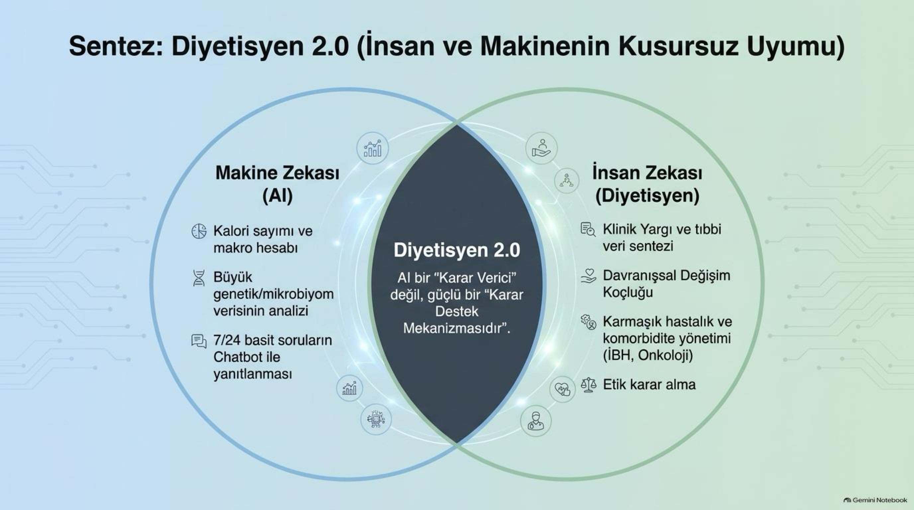
Ders Çıkarımları · 1. Bölüm: Eğitim & Davranışsal Dönüşüm
Geleceğin Diyetisyeni İçin Çıkarımlar: Eğitim, Simülasyon & Görev Kayması
Akademik ve klinik sahada başarılı bir Diyetisyen 2.0 olmak için gereken öncelikli dönüşümler:
Klinik Becerilerin Dijitalleşmesi: Beslenme ve Diyetetik lisans, lisansüstü ve sürekli mesleki eğitim (CPD) programlarına yapay zeka, makine öğrenimi ve sağlık veri analitiği zorunlu modül olarak eklenmelidir.
Saha Kanıtları: Suudi Arabistan'da 161 lisanslı diyetisyenle yapılan çalışmada diyetisyenlerin %81.4'ü dijital becerilerini iyi görürken, %62.7'si aktif yapay zeka kullanmakta; ancak %20.5'i yapılandırılmış eğitim talep etmektedir. Tayvan araştırmaları da özel atölyelerin teknoloji benimsemeyi ve güveni doğrudan artırdığını belgelemektedir.
Simüle Hasta Eğitimi (Monash ATLAS): Monash Üniversitesi tarafından geliştirilen ATLAS platformu; ses ve sohbet arayüzlü üretken yapay zekayı kullanarak öğrencilere sanal hastalarla (VSP) empati kurma, zor sorular sorma, yansıtma ve aktif dinleme imkanı sunar.
Anlık Geri Bildirim: Yapay zeka diyetisyenin yerini almak yerine; öğrencilerin hastayla bağ kurma (rapport building) ve motivasyonel görüşme yeteneklerini klinik sahaya çıkmadan önce risksiz bir ortamda defalarca pratik etmesini sağlar.
Bilişsel Yükü AI'ya Devretme: Tüketim kaydı alma, tahlil dökümü çıkarma ve standart kalori/makro hesaplama gibi mekanik angaryalar yapay zekaya devredilmektedir.
İnsani Dokunuşa Zaman Açma: Diyetisyenler kazandıkları vakti motivasyonel görüşmeye (motivational interviewing), davranış değişikliği koçluğuna, karmaşık klinik muhakemeye ve hastayla derin terapötik güven bağı kurmaya yönlendirmelidir.
Ders Çıkarımları · 2. Bölüm: Mühendislik & Güvenlik
Geleceğin Diyetisyeni İçin Çıkarımlar: Prompt, Ortak Dil & Güvenlik
Klinik kararlarda kanıta dayalı hassasiyet ve multidisipliner liderlik yetkinlikleri:
Sorgulama Becerisi (Prompt Engineering): Azimi ve ark. (2025); RD sınav sorularında Chain-of-Thought (CoT) ve CoT-SC gibi sorgulama teknikleri uygulandığında yapay zekanın klinik doğruluk puanının %94.48'e yükseldiğini kanıtlamıştır. Sistemi doğru yönlendirmek yeni temel beceridir.
Şeffaf Klinik Kanıt (OpenEvidence): Halüsinasyonu engellemek için Mayo Clinic destekli OpenEvidence gibi saygın tıp dergilerine doğrudan atıf veren RAG tabanlı tıp asistanları klinik karar süreçlerinde (EBP) "nokta-bakım" (point-of-care) aracı olarak kullanılmalıdır.
Bilgisayar Bilimcileriyle Aynı Dil: Biyoenformatik ve lipidomik alanındaki devrim, diyetisyenlerin yazılımcılar ve veri analistleri ile aynı dili konuşabilmesini (speak the language of computer scientists) gerektirmektedir.
Gıda Veritabanı Mimarisi: Geleceğin gıda veri tabanları, dijital reçete algoritmaları ve klinik karar sistemleri doğrudan diyetisyenlerin danışmanlığında ve gözetiminde geliştirilecektir.
Sorumluluk Bilinci: Tıbbi cihaz yazılımları (SaMD) ne kadar gelişirse gelişsin, hastaya verilen klinik reçetenin ve oluşabilecek zararların tıbbi/yasal sorumluluğu insan diyetisyene aittir.
Klinik Güvenlik Kalkanı: Hasta mahremiyeti (GDPR/KVKK), Federe Öğrenme (FL) ilkeleri, algoritmik sapmalar ve yapay zekanın kaçırdığı biyolojik hataları ilk bakışta denetleyecek bir "Güvenlik Denetçisi" (Safety Auditor) bilinci kazanılmalıdır.
Geleceğin Diyetisyen Profilleri · 1/7
🧬 1. Biyolojik Veri & Omiks Mimarı
Nutrigenomic & Digital Twin Data Architect
Genel Poliklinik Diyetisyeni / Bireysel Beslenme Danışmanı / Hassas Beslenme Uzmanı.
Hastadan gelen tekil bir tahlil veya kalori hesabı yerine; genetik dizilim (nutrigenomik), mikrobiyom (metagenomik), ter biyosensörleri, CGM glukoz grafikleri ve Dijital İkizinden (Digital Twin) gelen canlı veri akışını yönetir.
Çoklu-omik (multi-omics) entegrasyon panelleri, PGHD (Hasta Üretimli Sağlık Verisi) platformları ve öngörücü metabolik simülasyon motorları.
Yemeği hastaya yedirmeden önce dijital ikizinde simüle eder; tabağın 40 dakika sonra yaratacağı glisemik ve enflamatuar dalgalanmayı önceden nötralize edecek moleküler beslenme protokolleri tasarlar.
Geleceğin Diyetisyen Profilleri · 2/7
🛡️ 2. Klinik AI Güvenlik & Halüsinasyon Denetçisi
Clinical AI Safety & Algorithmic Auditor
Klinik Nütrisyon Diyetisyeni / Yataklı Servis ve Yoğun Bakım Diyetisyeni.
Yapay zekanın ürettiği menü ve tedavi taslaklarındaki biyolojik güvenlik açıklarını ve algoritmik mayınları ilk bakışta yakalayan son tıbbi ve yasal onay makamıdır.
SaMD (Tıbbi Cihaz Yazılımı) denetim arayüzleri, RAG doğrulama panelleri, SHAP/LIME açıklanabilir yapay zeka (XAI) görsel grafikleri.
Diyaliz hastasında kaloriyi/proteini %28-36 eksik hesaplamayı, Tip 1 diyabetteki %38'lik karbonhidrat aşımını, ketojenikteki %172 doymuş yağ patlamasını ve alerjenleri engelleyerek hastanın hayatını korur; FDA/CE SaMD mevzuatında resmi imzayı atar.
Geleceğin Diyetisyen Profilleri · 3/7
🧠 3. Nöro-Beslenme ve Hücresel Yaşlanma Uzmanı
Longevity & Neuro-Nutrition Specialist
Geriatri Diyetisyeni / Nöroloji Diyetisyeni / Sağlıklı Yaşlanma Danışmanı.
Faz 3 Proaktif Tıp vizyonuyla çalışır. Hastalıklar belirti vermeden 15-20 yıl önce devreye girer. P-tau 217 nörolojik biyobelirteçlerini ve Organ Saatlerini (Organ Clocks) izleyerek beyin ve bağışıklık yaşlanmasını hücresel düzeyde yavaşlatır.
Büyük Sağlık Modelleri (Large Health Models), retina görüntüleme (Retinal Vision-AI) damar yaşlanma skorları, hücresel anti-enflamatuar beslenme protokolleri.
Alzheimer, Parkinson ve immunosenescence (bağırsak/bağışıklık çöküşü) risklerini erkenden saptayarak P-tau 217 seviyelerini 6 ayda %40-75 düşürecek kişiselleştirilmiş nöro-koruyucu diyetleri yönetir.
Geleceğin Diyetisyen Profilleri · 4/7
🎗️ 4. Hassas Onko-Radyomiks Diyetisyeni
Precision Onco-Radiomics Specialist
Onkoloji Diyetisyeni / Kanser Beslenme Uzmanı.
Hastanın tartıdaki kilo kaybını beklemez. Kanser hastalarının rutin Bilgisayarlı Tomografi (BT/CT) kesitlerini yapay zeka ile tarayarak hücresel kas kaybını (sarkopeni/kaşeksi) doku düzeyinde izler.
U-Net / CycleGAN derin öğrenme segmentasyon modelleri, Geri Döndürülebilir Kaşeksi (PRCC) tahminleme algoritmaları ve graf tabanlı gıda matrisleri.
Tartıda kilo kaybı başlamadan önce sinsi kas erimesini 0.92-0.94 Dice doğruluk oranıyla yakalar; hastanın kemoterapi takvimine ve tümör metabolomik analizine özel immünonütrisyon tedavisi yazar.
Geleceğin Diyetisyen Profilleri · 5/7
🤍 5. Davranışsal Stratejist & Empatik Yaşam Lideri
Behavioral Strategist & Human-Centric Coach
Yeme Bozuklukları Diyetisyeni / Bilişsel Davranışçı Diyetisyen / Motivasyonel Koç.
Yapay zekanın asla sahip olamadığı "insani dokunuş" (human touch), gerçek empati ve psikolojik bağlama odaklanır. Yapay zekanın ürettiği soğuk teknik verileri hastanın evindeki buzdolabının diline tercüme eder.
Motivasyonel görüşme protokolleri, ATLAS benzeri sanal simülasyonlarda geliştirilmiş psikolojik iletişim modelleri, "Ortak Karar Verme" (Shared Decision-Making) konsolları.
Anoreksiya, Bulimiya, Tıkınırcasına Yeme Bozukluğu (BED), yas süreçleri ve duygusal yeme krizlerinde hastayla derin bir terapötik ittifak kurarak sürdürülebilir davranış değişikliği sağlar.
Geleceğin Diyetisyen Profilleri · 6/7
🌿 6. Sürdürülebilir Eko-TBS ve Biyo-Yazıcı Tasarımcısı
Eco-Foodservice & 3D Print Architect
Toplu Beslenme Sistemleri (TBS) / Kurum Diyetisyeni / Mutfak Yöneticisi.
Okul, hastane, fabrika ve kışlalarda binlerce kişilik menüleri planlarken; sadece kalori ve maliyeti değil, gıdanın karbon/su ayak izini ve tabak artığı (israf) oranlarını tek bir denklemde çözer.
Doğrusal Programlama (Simplex), Genetik Algoritmalar (GA), Takviyeli Öğrenme (RL), goFOOD Visual Plate Waste analitikleri ve 3D Gıda Yazıcıları.
Bir yandan hastane ve okullarda sıfır gıda israfı sağlarken, diğer yandan yaşlı veya disfajili hastalar için 3D gıda yazıcılarından basılabilir besleyici ve estetik menüler tasarlar.
Geleceğin Diyetisyen Profilleri · 7/7
🛠️ 7. Beslenme Biyoenformatikçisi & Prompt Mühendisi
Nutrition Bio-Informatician & Prompt Engineer
Akademisyen / Araştırmacı Diyetisyen / Sağlık Bilişimi Uzmanı.
Bilgisayar bilimcileri ile klinik diyetisyenler arasındaki köprüyü kurar. Yapay zekanın "uydurmasını" (halüsinasyon) engelleyen onaylı tıbbi kütüphaneleri ve bilgi grafiklerini (Knowledge Graphs) inşa eder.
RAG (Retrieval-Augmented Generation) mimarileri, DHerbKB/DIETNERD benzeri özel klinik veritabanları, CoT (Chain-of-Thought) prompt dizilimleri.
Beslenme bilimi ilkelerini algoritmaların "anlayacağı ve hata yapamayacağı" matematiksel kurallara (guardrails) dönüştürür; klinik karar destek sistemlerinin (CDSS) arkasındaki beslenme anayasasını kodlar.
Geleceğin İş Modelleri · Yeni Gelir Paradigması & Girişimcilik
Diyetisyenin Yeni Gelir Mimarisi: 5 Yüksek Katma Değerli Gelecek İş Modeli
Yapay zeka ile rutin hesaplama ameleliği otomatikleşirken; diyetisyenin ekonomik modeli kısıtlı "30 dakikalık poliklinik seans ücreti"nden çıkarak yüksek katma değerli, sürekli ve ölçeklenebilir 5 ana modele evrilmektedir:
Olası Model & Süreç: Tekil seans yerine; IBS veya Çölyak hastalarına RAG tabanlı mobil asistan sunma (fotoğraftan düşük-FODMAP ve semptom takibi). Diyetisyen haftalık risk özetine 2 dakika bakıp sesli koçluk verir; yüzlerce danışana 7/24 kesintisiz bakım sunarak tekrarlayan (recurring) abonelik geliri elde eder.
Olası Model & Süreç: Diyetisyenin inşa ettiği klinik bilgi kütüphanesini veya Türk mutfağına özel glisemik/besin veri tabanını (DHerbKB benzeri) diğer kliniklere, hastanelere ve meslektaşlarına "Klinik Karar Destek Paneli" olarak lisanslayıp kiralama.
Olası Model & Süreç: Süpermarket zincirleri veya online sipariş platformlarına "Diyabetik Dostu" veya "Glütensiz Güvenli Sepet" algoritmaları kodlama (FoodProX benzeri). Bireysel danışmanlıktan çok daha yüksek bütçeli kurumsal teknoloji ve beslenme danışmanlığı sözleşmeleri.
Olası Model & Süreç: Rutin kalori hesaplaması yapay zekaya devredildiğinden; diyetisyen tüm odağını üst düzey yöneticiler ve elit sporculara ayırır (CGM, mikrobiyom, Dijital İkiz simülasyonu). Standart vizite ücretlerinin çok üzerinde premium paketler sunar.
Olası Model & Süreç: Fabrika, okul ve büyük catering şirketlerine Doğrusal Programlama (Simplex/GA) modelleriyle sıfır atık, düşük karbon/su ayak izi ve hammadde optimizasyonu sağlama; kuruma sağlanan yıllık büyük bütçe tasarrufundan başarı primi alma.
Kişisel Gelecek Haritanız · Mezuniyet Vizyonu
🎯 İnteraktif Kariyer RadarıHangi Geleceğin Diyetisyen Rolü Sizi Heyecanlandırıyor?
Aşağıdaki 7 profilden birine tıklayın veya telefonunuzdan oylayarak sınıf içi dağılımı canlı izleyin:
Multi-omiks & Dijital İkiz
SaMD imza & Halüsinasyon
P-tau 217 & Organ Saatleri
BT tomografisi & Kaşeksi
Terapötik ittifak & Empati
Sıfır israf & Optimizasyon
RAG mimarisi & Bilgi Grafikleri
Kan şekeri sensörleri (CGM), bağırsak mikrobiyomu ve metabolomik verileri harmanlayarak kişiye özel dinamik simülasyonlar tasarlar.
Zihniyet Evrimi · Aydınlanma & Karşılaştırma
📊 Sınıfın Dönüşüm GrafiğiDersin Başı vs. Dersin Sonu Algı Değişimi
16 klinik alanı ve kanıtları gördükten sonra yapay zekaya rutin devir oranınız:
💡 Aydınlanma: Standart kalori ve liste ameleliği yapay zekaya devredildi; diyetisyenlik klinik güvenlik, biyolojik veri yorumlama ve derin empati makamına yükseldi.
Diyetisyenlik Mimarisinin Evrimi · Dün vs. Gelecek
Diyetisyenlik Mimarisinin Evrimi: Neler Değişti?
Yapay zeka bizi hesaplama ameleliğinden kurtarmış; her birimizi kendi alanında birer Biyolojik Sistem Mühendisi ve Empatik Davranış Lideri kılmıştır:
| ❌ DÜN (ORGAN / HASTALIK ODAKLI RUTİN) | ✨ GELECEK (SİSTEM / TEKNOLOJİ ODAKLI STRATEJİ) |
|---|---|
| ❌ Kalori ve Değişim Hesaplayıcısı: Standart gramaj, liste ve kalori ameleliği. | 🛠️ Biyolojik Veri & Omiks Mimarı: Çok boyutlu veri akışı & Dijital İkiz simülasyonu. |
| ❌ Manuel Yatak Başı Tarayıcısı: Form doldurma ve geç fark edilen malnütrisyon. | 🛡️ Klinik AI Güvenlik Denetçisi: SaMD imza yetkisi & algoritmik halüsinasyon kalkanı. |
| ❌ Standart Liste Hazırlayıcısı: Hastalık sonrası reaktif ve ezbere menüler. | 🧠 Nöro-Beslenme & Yaşlanma Uzmanı: 20 yıl önceden P-tau 217 & Organ Saatleri yönetimi. |
| ❌ Yüzeysel Kilo Takipçisi: Tartıdaki genel kilo kaybına bakan klasik yöntem. | 🎗️ Hassas Onko-Radyomiks Diyetisyeni: BT kesitlerinden doku düzeyinde kas takibi. |
| ❌ Soğuk Kural Koyucu: Yasaklayıcı liste ve broşür dağıtma pratiği. | 🤍 Davranışsal Stratejist & Empatik Lider: Derin terapötik ittifak & insan şefkati. |
LLM böbrek, T1D ve alerjen hatalarını ilk bakışta yakalayan son onay makamı.
Genomik, mikrobiyom ve CGM verilerini kişisel tabağa dönüştüren mimar.
Sentetik empatiyi aşan, travma ve yeme bozukluklarını yöneten insan kalbi.
CDSS ve RAG sistemlerinin beslenme anayasasını kodlayan yönetici akıl.
Diyetisyen 2.0 Manifestosu · 5 Dönüşüm İlkesi
Geleceğin Diyetisyeni İçin 5 Altın İlke
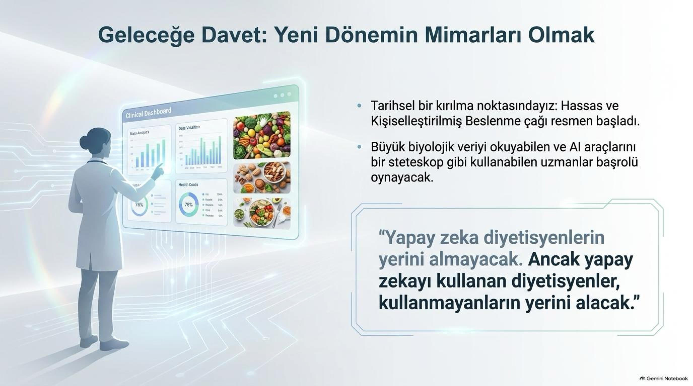